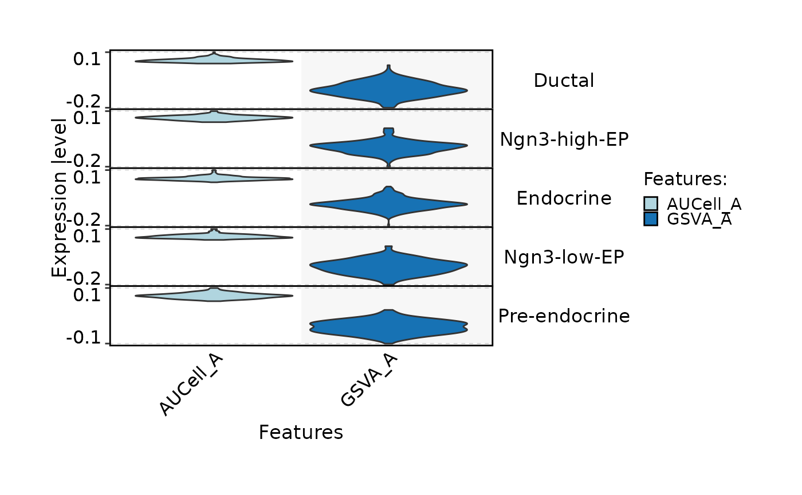
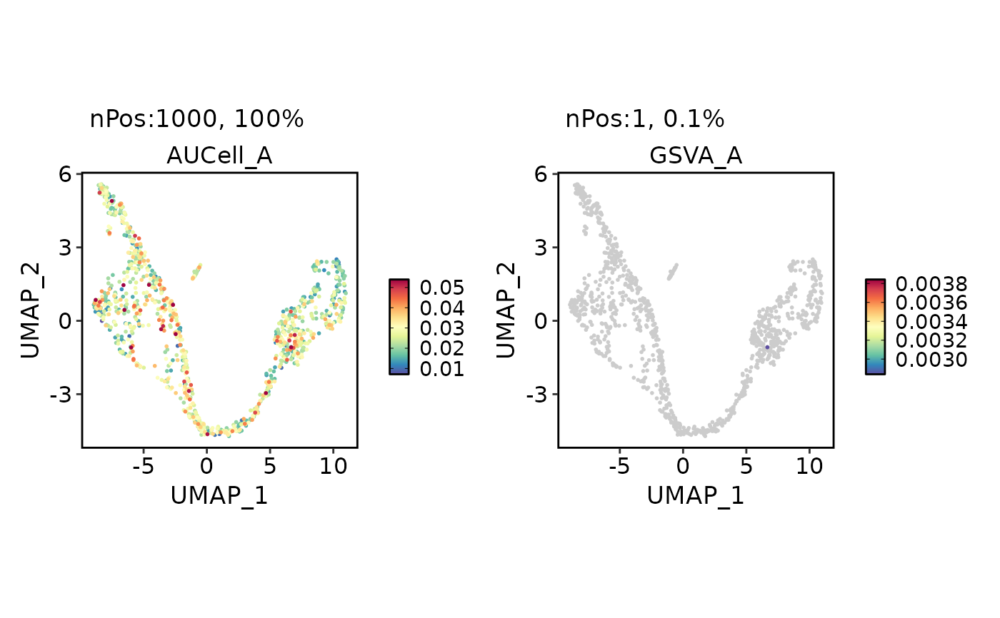
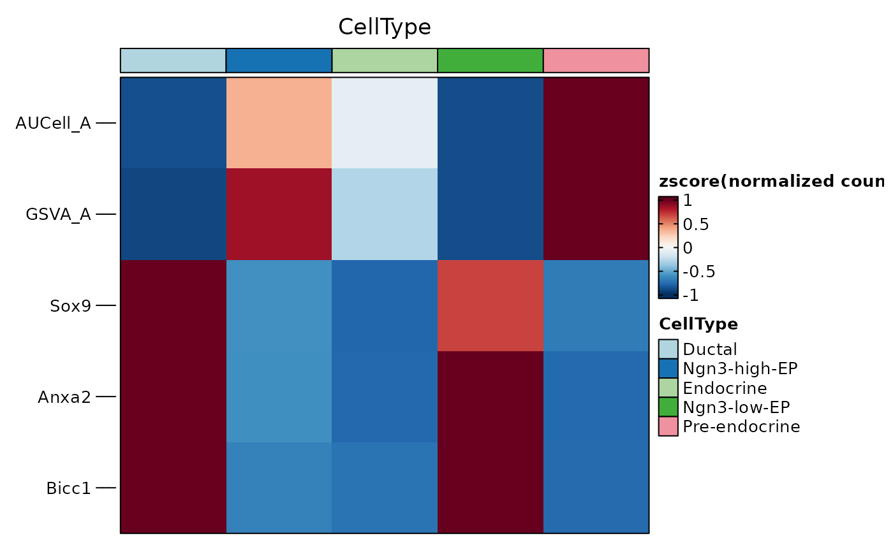
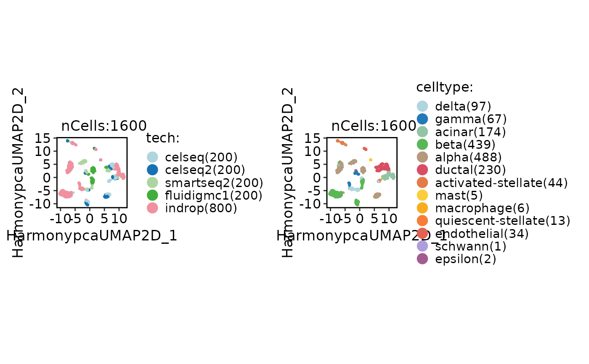

This function performs cell scoring on a Seurat object.
It calculates scores for a given set of features and stores them in meta.data
and/or a score assay, depending on new_assay and store_metadata.
Usage
CellScoring(
srt,
features = NULL,
layer = "data",
assay = NULL,
split.by = NULL,
IDtype = "symbol",
species = "Homo_sapiens",
db = "GO_BP",
termnames = NULL,
db_update = FALSE,
db_version = "latest",
convert_species = TRUE,
Ensembl_version = NULL,
mirror = NULL,
minGSSize = 10,
maxGSSize = 500,
method = "Seurat",
backend = c("cpp", "r"),
cpp_strategy = c("sparse", "aucell", "topk", "full"),
classification = TRUE,
name = "",
new_assay = FALSE,
store_metadata = NULL,
seed = 11,
cores = 1,
verbose = TRUE,
...
)Arguments
- srt
A Seurat object.
- features
A named list of feature lists for scoring. If
NULL,dbwill be used to create features sets.- layer
Which layer to use. Default is
data.- assay
Which assay to use. If
NULL, the default assay of the Seurat object will be used. When the object also containsChromatinAssay, the default assay and additionalChromatinAssaywill be preprocessed sequentially.- split.by
Name of a column in meta.data column to split plot by. Default is
NULL.- IDtype
A character vector specifying the type of gene IDs in the
srtobject orgeneIDargument. This argument is used to convert the gene IDs to a different type ifIDtypeis different fromresult_IDtype.- species
A character vector specifying the species for which the gene annotation databases should be prepared. Can be
"Homo_sapiens"or"Mus_musculus".- db
A character vector specifying the annotation sources to be included in the gene annotation databases. Can be one or more of
"GO", "GO_BP", "GO_CC", "GO_MF", "KEGG", "WikiPathway", "Reactome", "CORUM", "MP", "DO", "HPO", "PFAM", "CSPA", "Surfaceome", "SPRomeDB", "VerSeDa", "TFLink", "hTFtarget", "TRRUST", "JASPAR", "ENCODE", "MSigDB", "CellTalk", "CellChat", "Chromosome", "GeneType", "Enzyme", "TF", "CytoTRACE2". MSigDB subcollections can be requested as"MSigDB_<collection>", such as"MSigDB_H"for human Hallmark and"MSigDB_MH"for mouse Hallmark. Note:"CytoTRACE2"is species-independent and downloads pre-trained model data required by RunCytoTRACE.- termnames
A vector of term names to be used from the database. Default is
NULL, in which case all features from the database are used.- db_update
Whether the gene annotation databases should be forcefully updated. If set to FALSE, the function will attempt to load the cached databases instead. Default is
FALSE.- db_version
A character vector specifying the version of the gene annotation databases to be retrieved. Default is
"latest".- convert_species
Whether to use a species-converted database when the annotation is missing for the specified species. Default is
TRUE.- Ensembl_version
An integer specifying the Ensembl version. Default is
NULL. IfNULL, the latest version will be used.- mirror
Specify an Ensembl mirror to connect to. The valid options here are
"www","uswest","useast","asia".- minGSSize
The minimum size of a gene set to be considered in the enrichment analysis.
- maxGSSize
The maximum size of a gene set to be considered in the enrichment analysis.
- method
The method to use for scoring. Can be
"Seurat","AUCell","UCell","GSVA","ssGSEA","zscore","PLAGE", or"VISION". Multiple methods can be supplied at once; in that case each method is run separately and stored with a method suffix such as"GO_AUCell"or"GO_GSVA". Default is"Seurat".- backend
Scoring backend.
"cpp"is the default for supported methods."r"uses the original package implementation."cpp"currently supportsmethod = "Seurat",method = "AUCell",method = "GSVA",method = "ssGSEA",method = "zscore", andmethod = "PLAGE".method = "UCell"andmethod = "VISION"fall back to"r"whenbackendis not explicitly set.- cpp_strategy
AUCell scoring strategy used when
backend = "cpp"."sparse"ranks non-zero genes and approximates zero ties without densifying the expression matrix."aucell"calls the officialAUCell::AUCell_buildRankings()andAUCell::AUCell_calcAUC()path for exact consistency with the R backend,"topk"ranks only genes that can contribute to AUCell AUC, and"full"ranks all genes.- classification
Whether to perform classification based on the scores. Default is
TRUE.- name
The name of the assay to store the scores in. Only used if new_assay is TRUE. Default is
"".- new_assay
Whether to create a new assay for storing the scores. Default is
FALSE.- store_metadata
Whether to also store score columns in
meta.data. WhenNULL, manualfeatures = list(...)input is stored inmeta.databy default, while database-derived results stay assay-only whennew_assay = TRUE.- seed
Random seed for reproducibility. Default is
11.- cores
The number of cores to use for parallelization with foreach::foreach. Default is
1.- verbose
Whether to print the message. Default is
TRUE.- ...
Additional arguments to be passed to the scoring methods.
Examples
data(pancreas_sub)
pancreas_sub <- standard_scop(pancreas_sub)
#> ℹ [2026-06-25 06:41:20] Start standard processing workflow...
#> ℹ [2026-06-25 06:41:21] Checking a list of <Seurat>...
#> ! [2026-06-25 06:41:21] Data 1/1 of the `srt_list` is "unknown"
#> ℹ [2026-06-25 06:41:21] Perform `NormalizeData()` with `normalization.method = 'LogNormalize'` on 1/1 of `srt_list`...
#> ℹ [2026-06-25 06:41:21] Perform `FindVariableFeatures()` on 1/1 of `srt_list`...
#> ℹ [2026-06-25 06:41:21] Use the separate HVF from `srt_list`
#> ℹ [2026-06-25 06:41:21] Number of available HVF: 2000
#> ℹ [2026-06-25 06:41:21] Finished check
#> ℹ [2026-06-25 06:41:21] Perform `ScaleData()`
#> ℹ [2026-06-25 06:41:21] Perform pca linear dimension reduction
#> ℹ [2026-06-25 06:41:22] Use stored estimated dimensions 1:23 for Standardpca
#> ℹ [2026-06-25 06:41:22] Perform `Seurat::FindClusters()` with `cluster_algorithm = 'louvain'` and `cluster_resolution = 0.6`
#> ℹ [2026-06-25 06:41:22] Reorder clusters...
#> ℹ [2026-06-25 06:41:22] Skip `log1p()` because `layer = data` is not "counts"
#> ℹ [2026-06-25 06:41:22] Perform umap nonlinear dimension reduction
#> ✔ [2026-06-25 06:41:27] Standard processing workflow completed
features_all <- rownames(pancreas_sub)
pancreas_sub <- CellScoring(
pancreas_sub,
features = list(
A = features_all[1:100],
B = features_all[101:200]
),
method = "AUCell",
name = "test"
)
#> ℹ [2026-06-25 06:41:27] Start cell scoring
#> ℹ [2026-06-25 06:41:28] Data type is log-normalized
#> ℹ [2026-06-25 06:41:28] Number of feature lists to be scored: 2
#> ✔ [2026-06-25 06:41:28] Cell scoring completed
CellDimPlot(pancreas_sub, "test_classification")
 FeatureDimPlot(
pancreas_sub,
features = "test_A"
)
FeatureDimPlot(
pancreas_sub,
features = "test_A"
)
 pancreas_sub <- CellScoring(
pancreas_sub,
features = list(A = features_all[1:100]),
method = c("AUCell", "GSVA")
)
#> ℹ [2026-06-25 06:41:29] Start cell scoring
#> ℹ [2026-06-25 06:41:29] Start cell scoring
#> ℹ [2026-06-25 06:41:29] Data type is log-normalized
#> ℹ [2026-06-25 06:41:30] Number of feature lists to be scored: 1
#> ✔ [2026-06-25 06:41:30] Cell scoring completed
#> ℹ [2026-06-25 06:41:30] Start cell scoring
#> ℹ [2026-06-25 06:41:30] Data type is log-normalized
#> ℹ [2026-06-25 06:41:30] Number of feature lists to be scored: 1
#> ℹ 2516278 nonzeros (less than 2^31) and 84.27% sparsity
#> ✔ [2026-06-25 06:42:52] Cell scoring completed
FeatureStatPlot(
pancreas_sub,
stat.by = c("AUCell_A", "GSVA_A"),
group.by = "CellType",
plot.by = "feature",
plot_type = "violin",
stack = TRUE
)
#> ℹ [2026-06-25 06:42:52] Setting `group.by` to "Features" as `plot.by` is set to "feature"
pancreas_sub <- CellScoring(
pancreas_sub,
features = list(A = features_all[1:100]),
method = c("AUCell", "GSVA")
)
#> ℹ [2026-06-25 06:41:29] Start cell scoring
#> ℹ [2026-06-25 06:41:29] Start cell scoring
#> ℹ [2026-06-25 06:41:29] Data type is log-normalized
#> ℹ [2026-06-25 06:41:30] Number of feature lists to be scored: 1
#> ✔ [2026-06-25 06:41:30] Cell scoring completed
#> ℹ [2026-06-25 06:41:30] Start cell scoring
#> ℹ [2026-06-25 06:41:30] Data type is log-normalized
#> ℹ [2026-06-25 06:41:30] Number of feature lists to be scored: 1
#> ℹ 2516278 nonzeros (less than 2^31) and 84.27% sparsity
#> ✔ [2026-06-25 06:42:52] Cell scoring completed
FeatureStatPlot(
pancreas_sub,
stat.by = c("AUCell_A", "GSVA_A"),
group.by = "CellType",
plot.by = "feature",
plot_type = "violin",
stack = TRUE
)
#> ℹ [2026-06-25 06:42:52] Setting `group.by` to "Features" as `plot.by` is set to "feature"

FeatureDimPlot(
pancreas_sub,
features = c("AUCell_A", "GSVA_A"),
xlab = "UMAP_1",
ylab = "UMAP_2"
)

GroupHeatmap(
pancreas_sub,
features = c("AUCell_A", "GSVA_A", "Sox9", "Anxa2", "Bicc1"),
group.by = "CellType"
)
#> $plot

#>
#> $g_tree
#> gTree[GRID.gTree.11599]
#>
#> $matrix_list
#> $matrix_list$CellType
#> Ductal Ngn3-high-EP Endocrine Ngn3-low-EP Pre-endocrine
#> AUCell_A -0.6898028 0.6814256 -0.2740940 -1.0721911 1.3546623
#> GSVA_A 0.5904666 0.5803752 -1.7700722 0.2694525 0.3297779
#> Sox9 1.4288723 -0.6125486 -0.7946666 0.6788737 -0.7005309
#> Anxa2 1.1467252 -0.6170844 -0.7867363 1.0374551 -0.7803596
#> Bicc1 1.1109781 -0.6764747 -0.7375937 1.0784037 -0.7753133
#> attr(,"scaled:center")
#> AUCell_A GSVA_A Sox9 Anxa2 Bicc1
#> 0.01920529 0.10872510 1.96420268 2.04845477 1.94117464
#> attr(,"scaled:scale")
#> AUCell_A GSVA_A Sox9 Anxa2 Bicc1
#> 0.0007646939 0.0184930194 2.1633376549 2.5428690690 2.3797100097
#>
#>
#> $feature_split
#> NULL
#>
#> $cell_metadata
#> cells CellType
#> AAACCTGAGCCTTGAT AAACCTGAGCCTTGAT Ductal
#> AAACCTGGTAAGTGGC AAACCTGGTAAGTGGC Ngn3-high-EP
#> AAACGGGAGATATGGT AAACGGGAGATATGGT Ductal
#> AAACGGGCAAAGAATC AAACGGGCAAAGAATC Endocrine
#> AAACGGGGTACAGTTC AAACGGGGTACAGTTC Endocrine
#> AAACGGGTCAGCTCTC AAACGGGTCAGCTCTC Ngn3-low-EP
#> AAACGGGTCGCATGGC AAACGGGTCGCATGGC Endocrine
#> AAAGATGAGTCATGCT AAAGATGAGTCATGCT Endocrine
#> AAAGATGAGTCTTGCA AAAGATGAGTCTTGCA Endocrine
#> AAAGCAAAGCTACCTA AAAGCAAAGCTACCTA Pre-endocrine
#> AAAGCAACACATGGGA AAAGCAACACATGGGA Ductal
#> AAAGCAAGTGCAGTAG AAAGCAAGTGCAGTAG Endocrine
#> AAATGCCAGACTAAGT AAATGCCAGACTAAGT Endocrine
#> AAATGCCCAATGGAAT AAATGCCCAATGGAAT Endocrine
#> AAATGCCCACCAACCG AAATGCCCACCAACCG Ngn3-high-EP
#> AAATGCCCATGCTAGT AAATGCCCATGCTAGT Ngn3-high-EP
#> AAATGCCGTGATAAGT AAATGCCGTGATAAGT Endocrine
#> AACACGTGTCGACTGC AACACGTGTCGACTGC Pre-endocrine
#> AACCATGCACAGGAGT AACCATGCACAGGAGT Ngn3-high-EP
#> AACCATGGTTCGGCAC AACCATGGTTCGGCAC Ngn3-high-EP
#> AACCATGGTTGAACTC AACCATGGTTGAACTC Pre-endocrine
#> AACGTTGGTGCCTTGG AACGTTGGTGCCTTGG Ductal
#> AACTCAGGTGCCTGTG AACTCAGGTGCCTGTG Ngn3-high-EP
#> AACTCAGGTTGGAGGT AACTCAGGTTGGAGGT Ductal
#> AACTCAGTCCTCGCAT AACTCAGTCCTCGCAT Ngn3-high-EP
#> AACTCAGTCTGGTTCC AACTCAGTCTGGTTCC Ductal
#> AACTCCCCAGTTCATG AACTCCCCAGTTCATG Endocrine
#> AACTCCCTCGAGAGCA AACTCCCTCGAGAGCA Ductal
#> AACTCTTCATTTGCCC AACTCTTCATTTGCCC Endocrine
#> AACTGGTGTGCCTGTG AACTGGTGTGCCTGTG Ductal
#> AACTGGTTCTTACCGC AACTGGTTCTTACCGC Ductal
#> AACTTTCCACAGTCGC AACTTTCCACAGTCGC Ngn3-high-EP
#> AACTTTCCACTGCCAG AACTTTCCACTGCCAG Ductal
#> AACTTTCGTGACCAAG AACTTTCGTGACCAAG Ngn3-low-EP
#> AACTTTCTCCAGATCA AACTTTCTCCAGATCA Endocrine
#> AAGACCTAGACCTTTG AAGACCTAGACCTTTG Endocrine
#> AAGACCTAGTAGGCCA AAGACCTAGTAGGCCA Ngn3-high-EP
#> AAGACCTCAGGTTTCA AAGACCTCAGGTTTCA Ductal
#> AAGCCGCAGGCAGGTT AAGCCGCAGGCAGGTT Ductal
#> AAGCCGCCAATGGACG AAGCCGCCAATGGACG Ngn3-high-EP
#> AAGGAGCAGTACATGA AAGGAGCAGTACATGA Endocrine
#> AAGGCAGAGCTGAAAT AAGGCAGAGCTGAAAT Ductal
#> AAGGCAGTCCGAGCCA AAGGCAGTCCGAGCCA Ngn3-low-EP
#> AAGGTTCAGATAGTCA AAGGTTCAGATAGTCA Endocrine
#> AAGGTTCAGGAGCGAG AAGGTTCAGGAGCGAG Endocrine
#> AAGGTTCGTCAACTGT AAGGTTCGTCAACTGT Pre-endocrine
#> AAGTCTGGTTGGGACA AAGTCTGGTTGGGACA Endocrine
#> AAGTCTGTCCGAGCCA AAGTCTGTCCGAGCCA Ngn3-high-EP
#> AATCCAGAGGGTTCCC AATCCAGAGGGTTCCC Pre-endocrine
#> AATCCAGTCAGGTTCA AATCCAGTCAGGTTCA Pre-endocrine
#> AATCCAGTCGGTCCGA AATCCAGTCGGTCCGA Pre-endocrine
#> AATCGGTCATATGGTC AATCGGTCATATGGTC Ngn3-high-EP
#> AATCGGTTCCAAACTG AATCGGTTCCAAACTG Ngn3-high-EP
#> AATCGGTTCGTATCAG AATCGGTTCGTATCAG Endocrine
#> ACACCAAGTATAGGTA ACACCAAGTATAGGTA Endocrine
#> ACACCCTAGGACAGCT ACACCCTAGGACAGCT Ngn3-high-EP
#> ACACCCTTCCCAGGTG ACACCCTTCCCAGGTG Pre-endocrine
#> ACACCGGCATCACGTA ACACCGGCATCACGTA Ductal
#> ACACCGGCATGTCCTC ACACCGGCATGTCCTC Ductal
#> ACACCGGTCATGTCTT ACACCGGTCATGTCTT Endocrine
#> ACACTGAGTCCATGAT ACACTGAGTCCATGAT Pre-endocrine
#> ACAGCCGAGAGAACAG ACAGCCGAGAGAACAG Pre-endocrine
#> ACAGCCGAGAGGTACC ACAGCCGAGAGGTACC Endocrine
#> ACAGCCGAGTGGTCCC ACAGCCGAGTGGTCCC Ductal
#> ACAGCCGCATCGTCGG ACAGCCGCATCGTCGG Ngn3-high-EP
#> ACAGCTAAGTCGTTTG ACAGCTAAGTCGTTTG Endocrine
#> ACAGCTATCAAGGCTT ACAGCTATCAAGGCTT Endocrine
#> ACAGCTATCAGCATGT ACAGCTATCAGCATGT Ductal
#> ACAGCTATCTGGGCCA ACAGCTATCTGGGCCA Ductal
#> ACATACGAGTAGGCCA ACATACGAGTAGGCCA Ngn3-high-EP
#> ACATACGGTCTCTCTG ACATACGGTCTCTCTG Pre-endocrine
#> ACATCAGAGAGACTTA ACATCAGAGAGACTTA Pre-endocrine
#> ACATCAGTCCTTGGTC ACATCAGTCCTTGGTC Ngn3-high-EP
#> ACCAGTAAGTGATCGG ACCAGTAAGTGATCGG Endocrine
#> ACCAGTAGTTCGTTGA ACCAGTAGTTCGTTGA Endocrine
#> ACCAGTATCGTTTAGG ACCAGTATCGTTTAGG Ngn3-high-EP
#> ACCGTAAGTTATCACG ACCGTAAGTTATCACG Ductal
#> ACCTTTATCCTGCAGG ACCTTTATCCTGCAGG Endocrine
#> ACGAGCCCATGAGCGA ACGAGCCCATGAGCGA Endocrine
#> ACGAGGAAGTTACCCA ACGAGGAAGTTACCCA Ngn3-low-EP
#> ACGAGGATCATCACCC ACGAGGATCATCACCC Endocrine
#> ACGAGGATCGCCGTGA ACGAGGATCGCCGTGA Pre-endocrine
#> ACGATACAGATGAGAG ACGATACAGATGAGAG Endocrine
#> ACGATACTCGCGCCAA ACGATACTCGCGCCAA Endocrine
#> ACGATGTTCGCAGGCT ACGATGTTCGCAGGCT Pre-endocrine
#> ACGCAGCCATTCTCAT ACGCAGCCATTCTCAT Pre-endocrine
#> ACGCAGCGTAATCACC ACGCAGCGTAATCACC Ngn3-high-EP
#> ACGCCAGGTTACAGAA ACGCCAGGTTACAGAA Endocrine
#> ACGCCAGTCCCAAGTA ACGCCAGTCCCAAGTA Ngn3-high-EP
#> ACGCCGAAGGGTGTTG ACGCCGAAGGGTGTTG Endocrine
#> ACGCCGAGTTTGCATG ACGCCGAGTTTGCATG Endocrine
#> ACGGCCACACGTGAGA ACGGCCACACGTGAGA Ductal
#> ACGGGCTGTGCGATAG ACGGGCTGTGCGATAG Ductal
#> ACGTCAAAGGTGTTAA ACGTCAAAGGTGTTAA Endocrine
#> ACGTCAACACTGCCAG ACGTCAACACTGCCAG Ductal
#> ACGTCAACAGACAAAT ACGTCAACAGACAAAT Ductal
#> ACTATCTGTCAGGACA ACTATCTGTCAGGACA Endocrine
#> ACTATCTTCAAGATCC ACTATCTTCAAGATCC Pre-endocrine
#> ACTGAACAGCCTCGTG ACTGAACAGCCTCGTG Ductal
#> ACTGAGTAGTGACTCT ACTGAGTAGTGACTCT Ductal
#> ACTGATGCATCAGTAC ACTGATGCATCAGTAC Ngn3-high-EP
#> ACTGATGCATGGTCTA ACTGATGCATGGTCTA Endocrine
#> ACTGATGCATGTCTCC ACTGATGCATGTCTCC Pre-endocrine
#> ACTGATGGTGAGGGTT ACTGATGGTGAGGGTT Ductal
#> ACTGATGTCCCTAACC ACTGATGTCCCTAACC Ngn3-low-EP
#> ACTGCTCAGGTGTTAA ACTGCTCAGGTGTTAA Pre-endocrine
#> ACTGTCCCAGTTTACG ACTGTCCCAGTTTACG Pre-endocrine
#> ACTGTCCTCGCTAGCG ACTGTCCTCGCTAGCG Ngn3-high-EP
#> ACTTACTAGAGGGCTT ACTTACTAGAGGGCTT Ngn3-high-EP
#> ACTTACTAGCCGGTAA ACTTACTAGCCGGTAA Ngn3-low-EP
#> ACTTACTCAATCAGAA ACTTACTCAATCAGAA Ngn3-high-EP
#> ACTTACTCACATGTGT ACTTACTCACATGTGT Endocrine
#> ACTTGTTAGTGAAGTT ACTTGTTAGTGAAGTT Endocrine
#> ACTTGTTAGTTAAGTG ACTTGTTAGTTAAGTG Endocrine
#> ACTTGTTCATGGTCAT ACTTGTTCATGGTCAT Endocrine
#> ACTTGTTTCACCCGAG ACTTGTTTCACCCGAG Endocrine
#> ACTTTCAAGGATATAC ACTTTCAAGGATATAC Ductal
#> ACTTTCACAACTGCTA ACTTTCACAACTGCTA Ngn3-high-EP
#> AGAATAGCAATCACAC AGAATAGCAATCACAC Endocrine
#> AGAATAGCAGTACACT AGAATAGCAGTACACT Ductal
#> AGACGTTCAATGGTCT AGACGTTCAATGGTCT Endocrine
#> AGACGTTTCTTACCTA AGACGTTTCTTACCTA Ngn3-low-EP
#> AGAGCGACAGTAAGAT AGAGCGACAGTAAGAT Endocrine
#> AGAGCGATCTCTTGAT AGAGCGATCTCTTGAT Ductal
#> AGAGCTTAGCCGATTT AGAGCTTAGCCGATTT Ductal
#> AGAGCTTAGGTTACCT AGAGCTTAGGTTACCT Ngn3-high-EP
#> AGAGCTTGTTAAAGAC AGAGCTTGTTAAAGAC Ductal
#> AGAGTGGAGGCGATAC AGAGTGGAGGCGATAC Endocrine
#> AGAGTGGCACCTCGGA AGAGTGGCACCTCGGA Pre-endocrine
#> AGAGTGGGTAGCACGA AGAGTGGGTAGCACGA Ductal
#> AGAGTGGGTCACCTAA AGAGTGGGTCACCTAA Ngn3-low-EP
#> AGATCTGTCCGTCAAA AGATCTGTCCGTCAAA Pre-endocrine
#> AGATTGCAGCGTGTCC AGATTGCAGCGTGTCC Endocrine
#> AGATTGCAGCTGTCTA AGATTGCAGCTGTCTA Ductal
#> AGATTGCAGTTCCACA AGATTGCAGTTCCACA Ngn3-high-EP
#> AGATTGCCACCAGGCT AGATTGCCACCAGGCT Ductal
#> AGCAGCCGTCGCATCG AGCAGCCGTCGCATCG Ngn3-high-EP
#> AGCAGCCGTGTAACGG AGCAGCCGTGTAACGG Ngn3-high-EP
#> AGCAGCCTCTTTAGTC AGCAGCCTCTTTAGTC Ngn3-low-EP
#> AGCATACCACAGCCCA AGCATACCACAGCCCA Endocrine
#> AGCATACGTCCGCTGA AGCATACGTCCGCTGA Endocrine
#> AGCGGTCGTACCGAGA AGCGGTCGTACCGAGA Ngn3-high-EP
#> AGCGGTCGTCGAATCT AGCGGTCGTCGAATCT Ngn3-high-EP
#> AGCGGTCGTGTATGGG AGCGGTCGTGTATGGG Ductal
#> AGCGTCGCACAGGCCT AGCGTCGCACAGGCCT Ngn3-high-EP
#> AGCTCCTCAGTTTACG AGCTCCTCAGTTTACG Pre-endocrine
#> AGCTCCTGTGTGCCTG AGCTCCTGTGTGCCTG Ductal
#> AGCTCCTTCAATACCG AGCTCCTTCAATACCG Ngn3-high-EP
#> AGCTCCTTCGCCCTTA AGCTCCTTCGCCCTTA Pre-endocrine
#> AGCTCTCAGACATAAC AGCTCTCAGACATAAC Pre-endocrine
#> AGCTCTCGTTCAGTAC AGCTCTCGTTCAGTAC Endocrine
#> AGCTTGAAGACACGAC AGCTTGAAGACACGAC Ngn3-high-EP
#> AGCTTGAAGAGTGACC AGCTTGAAGAGTGACC Endocrine
#> AGCTTGACAATAGAGT AGCTTGACAATAGAGT Ngn3-low-EP
#> AGCTTGACAGTAAGAT AGCTTGACAGTAAGAT Ductal
#> AGCTTGACATCTATGG AGCTTGACATCTATGG Endocrine
#> AGCTTGAGTGCAGTAG AGCTTGAGTGCAGTAG Endocrine
#> AGGCCACAGCTGTCTA AGGCCACAGCTGTCTA Ngn3-low-EP
#> AGGCCACCATGACATC AGGCCACCATGACATC Endocrine
#> AGGCCGTCACGACGAA AGGCCGTCACGACGAA Ngn3-high-EP
#> AGGCCGTCACGGTGTC AGGCCGTCACGGTGTC Endocrine
#> AGGCCGTGTACCAGTT AGGCCGTGTACCAGTT Ngn3-low-EP
#> AGGGAGTAGGGTATCG AGGGAGTAGGGTATCG Ngn3-high-EP
#> AGGGAGTAGTGTCTCA AGGGAGTAGTGTCTCA Ductal
#> AGGGAGTTCCTCAATT AGGGAGTTCCTCAATT Endocrine
#> AGGGAGTTCGGAGGTA AGGGAGTTCGGAGGTA Endocrine
#> AGGGATGGTCGACTGC AGGGATGGTCGACTGC Endocrine
#> AGGGATGGTTAGGGTG AGGGATGGTTAGGGTG Ngn3-high-EP
#> AGGGATGTCGCATGAT AGGGATGTCGCATGAT Endocrine
#> AGGGATGTCGCATGGC AGGGATGTCGCATGGC Ngn3-high-EP
#> AGGGTGAGTGCGAAAC AGGGTGAGTGCGAAAC Endocrine
#> AGGTCATCACTTCTGC AGGTCATCACTTCTGC Endocrine
#> AGGTCATGTCTCCCTA AGGTCATGTCTCCCTA Endocrine
#> AGGTCATGTTTAGGAA AGGTCATGTTTAGGAA Pre-endocrine
#> AGTAGTCCACATGACT AGTAGTCCACATGACT Ngn3-low-EP
#> AGTAGTCGTGAGGGAG AGTAGTCGTGAGGGAG Endocrine
#> AGTAGTCGTTCTGTTT AGTAGTCGTTCTGTTT Ductal
#> AGTCTTTCACCAGGTC AGTCTTTCACCAGGTC Ductal
#> AGTCTTTCACGGACAA AGTCTTTCACGGACAA Endocrine
#> AGTCTTTGTTACGGAG AGTCTTTGTTACGGAG Endocrine
#> AGTGAGGGTTACGGAG AGTGAGGGTTACGGAG Ductal
#> AGTGAGGTCTCCAACC AGTGAGGTCTCCAACC Endocrine
#> AGTGGGACAGGTCGTC AGTGGGACAGGTCGTC Endocrine
#> AGTGGGAGTGGCAAAC AGTGGGAGTGGCAAAC Pre-endocrine
#> AGTGTCATCCCTTGTG AGTGTCATCCCTTGTG Pre-endocrine
#> AGTTGGTAGAGCCTAG AGTTGGTAGAGCCTAG Endocrine
#> AGTTGGTGTTGTCGCG AGTTGGTGTTGTCGCG Pre-endocrine
#> AGTTGGTTCACATAGC AGTTGGTTCACATAGC Ngn3-high-EP
#> ATAAGAGCATCGATTG ATAAGAGCATCGATTG Ductal
#> ATAGACCAGCGTGTCC ATAGACCAGCGTGTCC Endocrine
#> ATAGACCAGTGATCGG ATAGACCAGTGATCGG Endocrine
#> ATAGACCTCTAACTGG ATAGACCTCTAACTGG Ductal
#> ATCACGAGTGCACCAC ATCACGAGTGCACCAC Endocrine
#> ATCATCTGTGTTTGTG ATCATCTGTGTTTGTG Endocrine
#> ATCATCTTCTGTCAAG ATCATCTTCTGTCAAG Ductal
#> ATCATGGAGGAATGGA ATCATGGAGGAATGGA Endocrine
#> ATCATGGGTATTCGTG ATCATGGGTATTCGTG Endocrine
#> ATCATGGGTCCGCTGA ATCATGGGTCCGCTGA Ngn3-high-EP
#> ATCATGGTCCAGAGGA ATCATGGTCCAGAGGA Ductal
#> ATCCACCAGAGCCTAG ATCCACCAGAGCCTAG Endocrine
#> ATCCACCCAGCTCGCA ATCCACCCAGCTCGCA Endocrine
#> ATCCACCGTACCATCA ATCCACCGTACCATCA Ductal
#> ATCCGAAGTACACCGC ATCCGAAGTACACCGC Pre-endocrine
#> ATCCGAAGTGACTCAT ATCCGAAGTGACTCAT Ductal
#> ATCTGCCCAATCCGAT ATCTGCCCAATCCGAT Endocrine
#> ATCTGCCCATGTTGAC ATCTGCCCATGTTGAC Endocrine
#> ATGAGGGTCTTGACGA ATGAGGGTCTTGACGA Pre-endocrine
#> ATGTGTGCACAAGTAA ATGTGTGCACAAGTAA Ngn3-high-EP
#> ATGTGTGTCAAAGACA ATGTGTGTCAAAGACA Ngn3-high-EP
#> ATTACTCAGTTGCAGG ATTACTCAGTTGCAGG Ductal
#> ATTACTCTCAGGCGAA ATTACTCTCAGGCGAA Ductal
#> ATTACTCTCTGCCAGG ATTACTCTCTGCCAGG Endocrine
#> ATTATCCAGAAACCTA ATTATCCAGAAACCTA Ngn3-high-EP
#> ATTATCCAGACCCACC ATTATCCAGACCCACC Ngn3-high-EP
#> ATTATCCAGTGAACAT ATTATCCAGTGAACAT Ductal
#> ATTGGACAGTAATCCC ATTGGACAGTAATCCC Ngn3-low-EP
#> ATTGGTGTCCAGTATG ATTGGTGTCCAGTATG Ductal
#> ATTTCTGGTAGTGAAT ATTTCTGGTAGTGAAT Ngn3-low-EP
#> CAACCAAAGCGTTCCG CAACCAAAGCGTTCCG Pre-endocrine
#> CAACCAACAACCGCCA CAACCAACAACCGCCA Endocrine
#> CAACCAACACCTCGTT CAACCAACACCTCGTT Ngn3-high-EP
#> CAACCAATCGGGAGTA CAACCAATCGGGAGTA Ductal
#> CAAGAAAAGAGTACCG CAAGAAAAGAGTACCG Ngn3-high-EP
#> CAAGAAATCGTACCGG CAAGAAATCGTACCGG Ductal
#> CAAGGCCAGCTGTTCA CAAGGCCAGCTGTTCA Ductal
#> CAAGGCCAGTGTGGCA CAAGGCCAGTGTGGCA Ductal
#> CAAGGCCCACATTTCT CAAGGCCCACATTTCT Ngn3-high-EP
#> CAAGGCCTCAGTGCAT CAAGGCCTCAGTGCAT Endocrine
#> CAAGGCCTCTCAACTT CAAGGCCTCTCAACTT Pre-endocrine
#> CAAGGCCTCTTACCTA CAAGGCCTCTTACCTA Endocrine
#> CAAGTTGGTGTGCCTG CAAGTTGGTGTGCCTG Pre-endocrine
#> CAAGTTGTCTAACTGG CAAGTTGTCTAACTGG Pre-endocrine
#> CACAAACAGTAGCGGT CACAAACAGTAGCGGT Ngn3-high-EP
#> CACAAACCACGAAAGC CACAAACCACGAAAGC Endocrine
#> CACACAACAGCCAGAA CACACAACAGCCAGAA Ductal
#> CACACCTGTACATGTC CACACCTGTACATGTC Endocrine
#> CACACCTGTTATCCGA CACACCTGTTATCCGA Pre-endocrine
#> CACACTCAGATCCCAT CACACTCAGATCCCAT Ductal
#> CACACTCTCATGTGGT CACACTCTCATGTGGT Ngn3-low-EP
#> CACAGGCCAAGGCTCC CACAGGCCAAGGCTCC Pre-endocrine
#> CACAGGCCACGTCAGC CACAGGCCACGTCAGC Endocrine
#> CACAGTAGTGCACTTA CACAGTAGTGCACTTA Endocrine
#> CACAGTAGTTCCTCCA CACAGTAGTTCCTCCA Ductal
#> CACAGTATCCTCCTAG CACAGTATCCTCCTAG Ductal
#> CACATAGAGCGTGTCC CACATAGAGCGTGTCC Ductal
#> CACATTTGTTTCGCTC CACATTTGTTTCGCTC Ductal
#> CACATTTTCGAGGTAG CACATTTTCGAGGTAG Endocrine
#> CACATTTTCGCAGGCT CACATTTTCGCAGGCT Ductal
#> CACCACTAGCGATCCC CACCACTAGCGATCCC Endocrine
#> CACCACTGTGTGTGCC CACCACTGTGTGTGCC Pre-endocrine
#> CACCAGGCATAAAGGT CACCAGGCATAAAGGT Pre-endocrine
#> CACCTTGAGAGTAATC CACCTTGAGAGTAATC Ductal
#> CACTCCACATCGTCGG CACTCCACATCGTCGG Endocrine
#> CACTCCATCAACACAC CACTCCATCAACACAC Endocrine
#> CAGAATCCATTGGGCC CAGAATCCATTGGGCC Endocrine
#> CAGAATCGTCATTAGC CAGAATCGTCATTAGC Ngn3-high-EP
#> CAGAATCGTGTAAGTA CAGAATCGTGTAAGTA Ngn3-low-EP
#> CAGAGAGTCGGCCGAT CAGAGAGTCGGCCGAT Endocrine
#> CAGATCAAGCTGTTCA CAGATCAAGCTGTTCA Endocrine
#> CAGCAGCAGACAAAGG CAGCAGCAGACAAAGG Ductal
#> CAGCAGCCACACTGCG CAGCAGCCACACTGCG Ductal
#> CAGCAGCGTTCACGGC CAGCAGCGTTCACGGC Ductal
#> CAGCCGAAGCGATATA CAGCCGAAGCGATATA Ductal
#> CAGCCGAAGTAGGTGC CAGCCGAAGTAGGTGC Ductal
#> CAGCCGATCCTATTCA CAGCCGATCCTATTCA Ngn3-high-EP
#> CAGCCGATCGTTTATC CAGCCGATCGTTTATC Ngn3-high-EP
#> CAGCGACCACAGGAGT CAGCGACCACAGGAGT Ductal
#> CAGCTAAAGTCCATAC CAGCTAAAGTCCATAC Ductal
#> CAGCTAACATGCCTAA CAGCTAACATGCCTAA Pre-endocrine
#> CAGCTAAGTACCGAGA CAGCTAAGTACCGAGA Ngn3-high-EP
#> CAGCTGGCAAGTTGTC CAGCTGGCAAGTTGTC Pre-endocrine
#> CAGCTGGGTCTAACGT CAGCTGGGTCTAACGT Pre-endocrine
#> CAGCTGGGTTCTCATT CAGCTGGGTTCTCATT Endocrine
#> CAGGTGCAGCCAGGAT CAGGTGCAGCCAGGAT Endocrine
#> CAGGTGCCATCAGTCA CAGGTGCCATCAGTCA Pre-endocrine
#> CAGTCCTAGGTGGGTT CAGTCCTAGGTGGGTT Endocrine
#> CAGTCCTCAGGGCATA CAGTCCTCAGGGCATA Endocrine
#> CATATGGCATGTTGAC CATATGGCATGTTGAC Ductal
#> CATATGGGTTACTGAC CATATGGGTTACTGAC Endocrine
#> CATATGGTCACAGTAC CATATGGTCACAGTAC Pre-endocrine
#> CATATTCTCCTGTAGA CATATTCTCCTGTAGA Endocrine
#> CATCAGACATGCATGT CATCAGACATGCATGT Ductal
#> CATCAGAGTCTCTTTA CATCAGAGTCTCTTTA Pre-endocrine
#> CATCAGATCATCGCTC CATCAGATCATCGCTC Pre-endocrine
#> CATCGAAGTACGAAAT CATCGAAGTACGAAAT Endocrine
#> CATCGAAGTCACACGC CATCGAAGTCACACGC Endocrine
#> CATCGGGCACGTTGGC CATCGGGCACGTTGGC Endocrine
#> CATCGGGTCTTCGGTC CATCGGGTCTTCGGTC Ngn3-high-EP
#> CATGACACAACAACCT CATGACACAACAACCT Ngn3-low-EP
#> CATGACACATCGATTG CATGACACATCGATTG Ngn3-high-EP
#> CATGACAGTAGCTTGT CATGACAGTAGCTTGT Ngn3-low-EP
#> CATGACATCATGCATG CATGACATCATGCATG Endocrine
#> CATGCCTCACCCATTC CATGCCTCACCCATTC Endocrine
#> CATGGCGAGAGTCTGG CATGGCGAGAGTCTGG Ngn3-high-EP
#> CATTATCGTCATATCG CATTATCGTCATATCG Pre-endocrine
#> CCAATCCAGAGTAAGG CCAATCCAGAGTAAGG Ductal
#> CCACCTAAGACTTGAA CCACCTAAGACTTGAA Endocrine
#> CCACCTACAGCTCGAC CCACCTACAGCTCGAC Endocrine
#> CCACCTATCACCAGGC CCACCTATCACCAGGC Ductal
#> CCACCTATCTAAGCCA CCACCTATCTAAGCCA Endocrine
#> CCACGGAAGATCCTGT CCACGGAAGATCCTGT Endocrine
#> CCACGGAAGCAATCTC CCACGGAAGCAATCTC Endocrine
#> CCACGGAAGGGTGTTG CCACGGAAGGGTGTTG Endocrine
#> CCACGGAAGTCTCCTC CCACGGAAGTCTCCTC Pre-endocrine
#> CCACGGAGTCAACATC CCACGGAGTCAACATC Ngn3-high-EP
#> CCACGGAGTCTAGTCA CCACGGAGTCTAGTCA Endocrine
#> CCACGGAGTTACGACT CCACGGAGTTACGACT Ngn3-high-EP
#> CCACTACAGAGCTGGT CCACTACAGAGCTGGT Pre-endocrine
#> CCACTACAGAGTACCG CCACTACAGAGTACCG Ngn3-low-EP
#> CCACTACCAACGCACC CCACTACCAACGCACC Endocrine
#> CCAGCGACAGACGTAG CCAGCGACAGACGTAG Pre-endocrine
#> CCATGTCGTCGGCTCA CCATGTCGTCGGCTCA Ngn3-high-EP
#> CCATGTCTCCGCATAA CCATGTCTCCGCATAA Ngn3-high-EP
#> CCATTCGCATGCCTAA CCATTCGCATGCCTAA Ductal
#> CCATTCGGTAGGGACT CCATTCGGTAGGGACT Ductal
#> CCCAATCCAACTGGCC CCCAATCCAACTGGCC Endocrine
#> CCCAGTTAGCATCATC CCCAGTTAGCATCATC Endocrine
#> CCCAGTTGTCGTGGCT CCCAGTTGTCGTGGCT Endocrine
#> CCCAGTTGTGCGCTTG CCCAGTTGTGCGCTTG Endocrine
#> CCCAGTTTCAGCACAT CCCAGTTTCAGCACAT Endocrine
#> CCCATACAGACTTTCG CCCATACAGACTTTCG Endocrine
#> CCCATACCACATCCAA CCCATACCACATCCAA Ductal
#> CCCATACCATGCAACT CCCATACCATGCAACT Endocrine
#> CCCATACTCGTGGACC CCCATACTCGTGGACC Pre-endocrine
#> CCGGGATAGATCTGAA CCGGGATAGATCTGAA Ngn3-high-EP
#> CCGGGATTCGACAGCC CCGGGATTCGACAGCC Endocrine
#> CCGGTAGTCGGCTTGG CCGGTAGTCGGCTTGG Endocrine
#> CCGTACTAGGAGTACC CCGTACTAGGAGTACC Ngn3-high-EP
#> CCGTACTAGTCCGTAT CCGTACTAGTCCGTAT Ngn3-high-EP
#> CCGTACTTCAATAAGG CCGTACTTCAATAAGG Ngn3-low-EP
#> CCGTGGACATAGAAAC CCGTGGACATAGAAAC Endocrine
#> CCGTGGATCCAAGCCG CCGTGGATCCAAGCCG Ductal
#> CCGTGGATCTGTCTCG CCGTGGATCTGTCTCG Endocrine
#> CCGTGGATCTTAGAGC CCGTGGATCTTAGAGC Ngn3-high-EP
#> CCGTTCAAGCTAAACA CCGTTCAAGCTAAACA Endocrine
#> CCGTTCAAGGACCACA CCGTTCAAGGACCACA Ngn3-high-EP
#> CCGTTCACACATGACT CCGTTCACACATGACT Ngn3-low-EP
#> CCTACACAGATCCGAG CCTACACAGATCCGAG Ngn3-low-EP
#> CCTACACAGTACGTTC CCTACACAGTACGTTC Endocrine
#> CCTACACTCCTTTACA CCTACACTCCTTTACA Ductal
#> CCTACACTCTTTACAC CCTACACTCTTTACAC Endocrine
#> CCTACCACATCGATTG CCTACCACATCGATTG Ngn3-high-EP
#> CCTACCAGTTGCTCCT CCTACCAGTTGCTCCT Pre-endocrine
#> CCTACCATCTGCCCTA CCTACCATCTGCCCTA Endocrine
#> CCTAGCTCAGACTCGC CCTAGCTCAGACTCGC Ductal
#> CCTAGCTCATACTACG CCTAGCTCATACTACG Ductal
#> CCTAGCTGTGGCCCTA CCTAGCTGTGGCCCTA Endocrine
#> CCTAGCTTCGATGAGG CCTAGCTTCGATGAGG Ductal
#> CCTATTACAGACAAGC CCTATTACAGACAAGC Endocrine
#> CCTATTATCATCGCTC CCTATTATCATCGCTC Ngn3-high-EP
#> CCTCAGTAGTGCGATG CCTCAGTAGTGCGATG Pre-endocrine
#> CCTCAGTCAGACACTT CCTCAGTCAGACACTT Endocrine
#> CCTCAGTGTTACCAGT CCTCAGTGTTACCAGT Ngn3-high-EP
#> CCTCTGAGTATAAACG CCTCTGAGTATAAACG Ductal
#> CCTTACGAGATCACGG CCTTACGAGATCACGG Ductal
#> CCTTACGCACAACGCC CCTTACGCACAACGCC Pre-endocrine
#> CCTTCCCAGGCAGGTT CCTTCCCAGGCAGGTT Ductal
#> CCTTCCCCAAAGTGCG CCTTCCCCAAAGTGCG Ductal
#> CCTTCCCTCGTCGTTC CCTTCCCTCGTCGTTC Pre-endocrine
#> CCTTCGAAGATAGCAT CCTTCGAAGATAGCAT Endocrine
#> CCTTCGACAGCTGTTA CCTTCGACAGCTGTTA Ngn3-low-EP
#> CCTTCGATCACAGGCC CCTTCGATCACAGGCC Endocrine
#> CGAACATAGCCAGTAG CGAACATAGCCAGTAG Ductal
#> CGAACATCAGACGTAG CGAACATCAGACGTAG Ductal
#> CGAATGTAGTTCCACA CGAATGTAGTTCCACA Ductal
#> CGAATGTGTCTGGAGA CGAATGTGTCTGGAGA Pre-endocrine
#> CGAATGTTCACCGGGT CGAATGTTCACCGGGT Pre-endocrine
#> CGAATGTTCTTCATGT CGAATGTTCTTCATGT Endocrine
#> CGACCTTAGCGCTTAT CGACCTTAGCGCTTAT Ngn3-low-EP
#> CGACCTTAGGCTAGAC CGACCTTAGGCTAGAC Endocrine
#> CGACTTCCAGCCTATA CGACTTCCAGCCTATA Ductal
#> CGACTTCCAGCTGCAC CGACTTCCAGCTGCAC Pre-endocrine
#> CGACTTCTCACGCGGT CGACTTCTCACGCGGT Endocrine
#> CGAGAAGAGGGTTCCC CGAGAAGAGGGTTCCC Endocrine
#> CGAGAAGCACGCATCG CGAGAAGCACGCATCG Ngn3-high-EP
#> CGAGAAGTCGTTACAG CGAGAAGTCGTTACAG Endocrine
#> CGAGCACAGCTGAAAT CGAGCACAGCTGAAAT Ductal
#> CGAGCACAGGCAGGTT CGAGCACAGGCAGGTT Pre-endocrine
#> CGAGCACGTAGTAGTA CGAGCACGTAGTAGTA Pre-endocrine
#> CGAGCACTCTACCTGC CGAGCACTCTACCTGC Ductal
#> CGAGCACTCTTCGAGA CGAGCACTCTTCGAGA Ngn3-low-EP
#> CGATCGGAGCTGCAAG CGATCGGAGCTGCAAG Pre-endocrine
#> CGATCGGCACGCCAGT CGATCGGCACGCCAGT Ngn3-high-EP
#> CGATGGCGTTACGGAG CGATGGCGTTACGGAG Ductal
#> CGATGGCTCAGTGTTG CGATGGCTCAGTGTTG Endocrine
#> CGATGGCTCTGTGCAA CGATGGCTCTGTGCAA Ductal
#> CGATGTAAGTTTAGGA CGATGTAAGTTTAGGA Endocrine
#> CGATGTAGTACTCTCC CGATGTAGTACTCTCC Ngn3-high-EP
#> CGATTGAAGTCAAGGC CGATTGAAGTCAAGGC Pre-endocrine
#> CGCCAAGCAAAGTCAA CGCCAAGCAAAGTCAA Ngn3-high-EP
#> CGCCAAGCACCGGAAA CGCCAAGCACCGGAAA Ductal
#> CGCCAAGTCTAAGCCA CGCCAAGTCTAAGCCA Endocrine
#> CGCGGTAAGAGCTGGT CGCGGTAAGAGCTGGT Endocrine
#> CGCGGTAAGCTGCAAG CGCGGTAAGCTGCAAG Endocrine
#> CGCGTTTCAGTCTTCC CGCGTTTCAGTCTTCC Endocrine
#> CGCTGGAGTCCATCCT CGCTGGAGTCCATCCT Ductal
#> CGCTTCATCTCTGTCG CGCTTCATCTCTGTCG Endocrine
#> CGGACACAGTGTCTCA CGGACACAGTGTCTCA Ductal
#> CGGACGTAGACACGAC CGGACGTAGACACGAC Endocrine
#> CGGACTGAGGTAGCTG CGGACTGAGGTAGCTG Ductal
#> CGGACTGTCTTGAGAC CGGACTGTCTTGAGAC Endocrine
#> CGGAGCTAGATAGTCA CGGAGCTAGATAGTCA Endocrine
#> CGGAGCTCATTGGGCC CGGAGCTCATTGGGCC Ductal
#> CGGAGTCAGTTTAGGA CGGAGTCAGTTTAGGA Endocrine
#> CGGCTAGGTACTCGCG CGGCTAGGTACTCGCG Ngn3-high-EP
#> CGGGTCAAGGCGATAC CGGGTCAAGGCGATAC Endocrine
#> CGGGTCAAGGCTCAGA CGGGTCAAGGCTCAGA Ductal
#> CGGTTAAAGAGCTGCA CGGTTAAAGAGCTGCA Ductal
#> CGGTTAAGTAAACACA CGGTTAAGTAAACACA Ngn3-low-EP
#> CGGTTAAGTCTAGCCG CGGTTAAGTCTAGCCG Ngn3-high-EP
#> CGGTTAATCACCGGGT CGGTTAATCACCGGGT Pre-endocrine
#> CGGTTAATCGTCTGAA CGGTTAATCGTCTGAA Ductal
#> CGTAGCGTCGGAAATA CGTAGCGTCGGAAATA Pre-endocrine
#> CGTAGGCAGCGTAGTG CGTAGGCAGCGTAGTG Ductal
#> CGTCACTAGGGTGTGT CGTCACTAGGGTGTGT Ductal
#> CGTCACTCACGAAATA CGTCACTCACGAAATA Ngn3-low-EP
#> CGTCACTCATAGTAAG CGTCACTCATAGTAAG Ngn3-low-EP
#> CGTCACTTCACTTATC CGTCACTTCACTTATC Pre-endocrine
#> CGTCACTTCTAACTCT CGTCACTTCTAACTCT Endocrine
#> CGTCAGGAGCCTATGT CGTCAGGAGCCTATGT Ngn3-low-EP
#> CGTCAGGCATGGGAAC CGTCAGGCATGGGAAC Ngn3-low-EP
#> CGTCAGGGTAGGCATG CGTCAGGGTAGGCATG Ngn3-high-EP
#> CGTCAGGTCCGCAAGC CGTCAGGTCCGCAAGC Endocrine
#> CGTCAGGTCCTGCCAT CGTCAGGTCCTGCCAT Ductal
#> CGTCCATGTCTAACGT CGTCCATGTCTAACGT Endocrine
#> CGTCCATTCGCGCCAA CGTCCATTCGCGCCAA Ngn3-high-EP
#> CGTCTACAGATCTGCT CGTCTACAGATCTGCT Ductal
#> CGTCTACAGGGAGTAA CGTCTACAGGGAGTAA Endocrine
#> CGTGAGCTCAGCGATT CGTGAGCTCAGCGATT Ngn3-high-EP
#> CGTGAGCTCTTCTGGC CGTGAGCTCTTCTGGC Endocrine
#> CGTGTAAGTCTTGATG CGTGTAAGTCTTGATG Ngn3-low-EP
#> CGTGTAATCATTATCC CGTGTAATCATTATCC Ngn3-high-EP
#> CGTGTAATCCATGCTC CGTGTAATCCATGCTC Ductal
#> CGTGTCTCAGAAGCAC CGTGTCTCAGAAGCAC Endocrine
#> CGTGTCTGTAGCGTCC CGTGTCTGTAGCGTCC Endocrine
#> CGTTAGAAGTATCTCG CGTTAGAAGTATCTCG Ductal
#> CGTTAGAGTGCAACGA CGTTAGAGTGCAACGA Ductal
#> CGTTCTGAGGACGAAA CGTTCTGAGGACGAAA Endocrine
#> CGTTCTGTCACAATGC CGTTCTGTCACAATGC Ngn3-high-EP
#> CGTTCTGTCGATAGAA CGTTCTGTCGATAGAA Endocrine
#> CGTTGGGCAGGCGATA CGTTGGGCAGGCGATA Pre-endocrine
#> CTAACTTAGAGGTACC CTAACTTAGAGGTACC Endocrine
#> CTAACTTAGATCACGG CTAACTTAGATCACGG Endocrine
#> CTAACTTCATCTGGTA CTAACTTCATCTGGTA Endocrine
#> CTAACTTCATTGGGCC CTAACTTCATTGGGCC Ductal
#> CTAAGACAGCACGCCT CTAAGACAGCACGCCT Ngn3-high-EP
#> CTAAGACAGCCACGCT CTAAGACAGCCACGCT Ngn3-low-EP
#> CTAAGACGTATCAGTC CTAAGACGTATCAGTC Endocrine
#> CTAAGACTCTGCGGCA CTAAGACTCTGCGGCA Endocrine
#> CTAATGGCATGGTTGT CTAATGGCATGGTTGT Pre-endocrine
#> CTACACCCATCAGTCA CTACACCCATCAGTCA Endocrine
#> CTACACCGTCGAATCT CTACACCGTCGAATCT Ductal
#> CTACACCGTCGCCATG CTACACCGTCGCCATG Ductal
#> CTACATTCACCGTTGG CTACATTCACCGTTGG Pre-endocrine
#> CTACATTGTTACTGAC CTACATTGTTACTGAC Pre-endocrine
#> CTACCCAGTGCGCTTG CTACCCAGTGCGCTTG Ductal
#> CTACGTCAGCTAGGCA CTACGTCAGCTAGGCA Pre-endocrine
#> CTAGAGTCACTGTTAG CTAGAGTCACTGTTAG Ductal
#> CTAGCCTGTCTCTTAT CTAGCCTGTCTCTTAT Ductal
#> CTAGCCTGTTCGGGCT CTAGCCTGTTCGGGCT Ductal
#> CTAGCCTTCAGCGATT CTAGCCTTCAGCGATT Ductal
#> CTAGTGATCAAAGACA CTAGTGATCAAAGACA Endocrine
#> CTAGTGATCCCAGGTG CTAGTGATCCCAGGTG Endocrine
#> CTCACACGTCACACGC CTCACACGTCACACGC Ngn3-high-EP
#> CTCAGAACACTAGTAC CTCAGAACACTAGTAC Ngn3-high-EP
#> CTCAGAACATAGGATA CTCAGAACATAGGATA Endocrine
#> CTCAGAAGTCCTCTTG CTCAGAAGTCCTCTTG Ductal
#> CTCAGAATCAGGTTCA CTCAGAATCAGGTTCA Ngn3-low-EP
#> CTCATTACAAGCGCTC CTCATTACAAGCGCTC Ductal
#> CTCCTAGCACAACGTT CTCCTAGCACAACGTT Pre-endocrine
#> CTCGAAAGTAAGAGGA CTCGAAAGTAAGAGGA Ngn3-high-EP
#> CTCGAAAGTGGTGTAG CTCGAAAGTGGTGTAG Endocrine
#> CTCGAAATCCTGCCAT CTCGAAATCCTGCCAT Endocrine
#> CTCGAGGCAAGTCTGT CTCGAGGCAAGTCTGT Endocrine
#> CTCGAGGGTAAGTAGT CTCGAGGGTAAGTAGT Endocrine
#> CTCGAGGTCTGTTGAG CTCGAGGTCTGTTGAG Ngn3-high-EP
#> CTCGGAGGTCATTAGC CTCGGAGGTCATTAGC Pre-endocrine
#> CTCGGAGGTGAAGGCT CTCGGAGGTGAAGGCT Pre-endocrine
#> CTCGTACCAATGGATA CTCGTACCAATGGATA Ductal
#> CTCGTACTCTTTAGTC CTCGTACTCTTTAGTC Endocrine
#> CTCGTCAAGAACAATC CTCGTCAAGAACAATC Endocrine
#> CTCGTCACAACTGCTA CTCGTCACAACTGCTA Ductal
#> CTCGTCATCGGTCTAA CTCGTCATCGGTCTAA Ductal
#> CTCTAATAGTTATCGC CTCTAATAGTTATCGC Endocrine
#> CTCTGGTAGCAATCTC CTCTGGTAGCAATCTC Ngn3-high-EP
#> CTCTGGTAGTCCCACG CTCTGGTAGTCCCACG Ductal
#> CTCTGGTCAACACCTA CTCTGGTCAACACCTA Ductal
#> CTCTGGTCAAGACACG CTCTGGTCAAGACACG Endocrine
#> CTCTGGTCAAGTTGTC CTCTGGTCAAGTTGTC Pre-endocrine
#> CTCTGGTCAGTTCATG CTCTGGTCAGTTCATG Ngn3-low-EP
#> CTGAAACAGACTAGGC CTGAAACAGACTAGGC Ductal
#> CTGAAACGTAGCGCAA CTGAAACGTAGCGCAA Endocrine
#> CTGAAACGTATGGTTC CTGAAACGTATGGTTC Endocrine
#> CTGAAACTCGATAGAA CTGAAACTCGATAGAA Ngn3-high-EP
#> CTGAAACTCGCCGTGA CTGAAACTCGCCGTGA Ductal
#> CTGAAACTCTGTTTGT CTGAAACTCTGTTTGT Ngn3-high-EP
#> CTGAAGTGTTTGGGCC CTGAAGTGTTTGGGCC Endocrine
#> CTGAAGTTCTGCGGCA CTGAAGTTCTGCGGCA Pre-endocrine
#> CTGATCCTCAGTTGAC CTGATCCTCAGTTGAC Ductal
#> CTGCCTAGTCTCCATC CTGCCTAGTCTCCATC Ductal
#> CTGCGGACAGACTCGC CTGCGGACAGACTCGC Ngn3-high-EP
#> CTGCGGACATTAGCCA CTGCGGACATTAGCCA Pre-endocrine
#> CTGCGGATCAGCATGT CTGCGGATCAGCATGT Ductal
#> CTGCTGTAGACTGGGT CTGCTGTAGACTGGGT Pre-endocrine
#> CTGCTGTCAAAGCAAT CTGCTGTCAAAGCAAT Endocrine
#> CTGGTCTAGGATTCGG CTGGTCTAGGATTCGG Pre-endocrine
#> CTGGTCTAGGTGATTA CTGGTCTAGGTGATTA Endocrine
#> CTGGTCTCAGGAATGC CTGGTCTCAGGAATGC Ductal
#> CTGGTCTTCGCATGGC CTGGTCTTCGCATGGC Ngn3-high-EP
#> CTGTGCTCATTACCTT CTGTGCTCATTACCTT Ngn3-high-EP
#> CTTAACTCAAGCGTAG CTTAACTCAAGCGTAG Ductal
#> CTTAACTTCAGCTTAG CTTAACTTCAGCTTAG Pre-endocrine
#> CTTAGGACACAGGTTT CTTAGGACACAGGTTT Ductal
#> CTTAGGAGTCCGAATT CTTAGGAGTCCGAATT Ductal
#> CTTAGGATCAACGGGA CTTAGGATCAACGGGA Endocrine
#> CTTAGGATCACTCTTA CTTAGGATCACTCTTA Ngn3-high-EP
#> CTTCTCTAGGCAGGTT CTTCTCTAGGCAGGTT Ductal
#> CTTCTCTAGTCCGTAT CTTCTCTAGTCCGTAT Pre-endocrine
#> CTTCTCTCAGCATACT CTTCTCTCAGCATACT Endocrine
#> CTTCTCTGTCAGAGGT CTTCTCTGTCAGAGGT Endocrine
#> CTTGGCTAGACAGACC CTTGGCTAGACAGACC Ductal
#> CTTGGCTAGGACACCA CTTGGCTAGGACACCA Ductal
#> CTTGGCTCAAAGGAAG CTTGGCTCAAAGGAAG Pre-endocrine
#> CTTGGCTCAGCCACCA CTTGGCTCAGCCACCA Ngn3-high-EP
#> CTTGGCTCATCCCACT CTTGGCTCATCCCACT Endocrine
#> CTTGGCTGTTAGAACA CTTGGCTGTTAGAACA Endocrine
#> CTTTGCGAGACCACGA CTTTGCGAGACCACGA Pre-endocrine
#> CTTTGCGAGGAATGGA CTTTGCGAGGAATGGA Ngn3-low-EP
#> CTTTGCGTCCACGTGG CTTTGCGTCCACGTGG Endocrine
#> GAAACTCAGAAACCTA GAAACTCAGAAACCTA Endocrine
#> GAAATGAAGCTCCTCT GAAATGAAGCTCCTCT Ngn3-high-EP
#> GAAATGACAACTGGCC GAAATGACAACTGGCC Ngn3-low-EP
#> GAAATGACACATGACT GAAATGACACATGACT Ductal
#> GAAATGAGTCACCCAG GAAATGAGTCACCCAG Ngn3-high-EP
#> GAAATGAGTCGGATCC GAAATGAGTCGGATCC Ductal
#> GAACATCGTAATCGTC GAACATCGTAATCGTC Ductal
#> GAACCTAAGTAGATGT GAACCTAAGTAGATGT Endocrine
#> GAACCTATCACTTATC GAACCTATCACTTATC Endocrine
#> GAACGGAAGTCAAGCG GAACGGAAGTCAAGCG Endocrine
#> GAACGGACAAGGACAC GAACGGACAAGGACAC Endocrine
#> GAAGCAGGTCGCGAAA GAAGCAGGTCGCGAAA Pre-endocrine
#> GAAGCAGGTCTAGAGG GAAGCAGGTCTAGAGG Endocrine
#> GAAGCAGTCAAGGCTT GAAGCAGTCAAGGCTT Ductal
#> GAATGAAAGAATGTGT GAATGAAAGAATGTGT Ngn3-high-EP
#> GAATGAACAATCGAAA GAATGAACAATCGAAA Ductal
#> GAATGAACAGCCTTGG GAATGAACAGCCTTGG Ductal
#> GAATGAATCATCGGAT GAATGAATCATCGGAT Endocrine
#> GACACGCCAAAGGAAG GACACGCCAAAGGAAG Ductal
#> GACCAATAGAATGTGT GACCAATAGAATGTGT Endocrine
#> GACCAATCAGACGCCT GACCAATCAGACGCCT Pre-endocrine
#> GACCAATGTTATCCGA GACCAATGTTATCCGA Endocrine
#> GACCAATGTTGGACCC GACCAATGTTGGACCC Endocrine
#> GACCAATTCAACGGCC GACCAATTCAACGGCC Ngn3-high-EP
#> GACCTGGGTTCGTGAT GACCTGGGTTCGTGAT Endocrine
#> GACGCGTCAGTCGTGC GACGCGTCAGTCGTGC Ductal
#> GACGCGTGTCGGCTCA GACGCGTGTCGGCTCA Endocrine
#> GACGGCTAGGTGATAT GACGGCTAGGTGATAT Ductal
#> GACGGCTTCAACTCTT GACGGCTTCAACTCTT Pre-endocrine
#> GACGTGCGTCACCTAA GACGTGCGTCACCTAA Pre-endocrine
#> GACGTGCTCCGGCACA GACGTGCTCCGGCACA Endocrine
#> GACGTTAAGACGCAAC GACGTTAAGACGCAAC Ductal
#> GACGTTAAGACGCTTT GACGTTAAGACGCTTT Ngn3-high-EP
#> GACGTTACATCTCGCT GACGTTACATCTCGCT Endocrine
#> GACGTTAGTGTGAATA GACGTTAGTGTGAATA Pre-endocrine
#> GACTAACGTCATCCCT GACTAACGTCATCCCT Ngn3-high-EP
#> GACTAACTCAGTCCCT GACTAACTCAGTCCCT Ductal
#> GACTACAGTTCGTGAT GACTACAGTTCGTGAT Ductal
#> GACTGCGAGAATCTCC GACTGCGAGAATCTCC Ngn3-high-EP
#> GAGCAGAAGCGTGTCC GAGCAGAAGCGTGTCC Ductal
#> GAGCAGAGTTTGCATG GAGCAGAGTTTGCATG Endocrine
#> GAGCAGATCAACTCTT GAGCAGATCAACTCTT Pre-endocrine
#> GAGGTGAGTCCGCTGA GAGGTGAGTCCGCTGA Pre-endocrine
#> GAGGTGAGTGACAAAT GAGGTGAGTGACAAAT Ductal
#> GAGTCCGAGCGATGAC GAGTCCGAGCGATGAC Ngn3-high-EP
#> GAGTCCGAGTTAAGTG GAGTCCGAGTTAAGTG Ductal
#> GAGTCCGCAATTGCTG GAGTCCGCAATTGCTG Ductal
#> GATCAGTAGGTGATAT GATCAGTAGGTGATAT Endocrine
#> GATCGATAGAAAGTGG GATCGATAGAAAGTGG Pre-endocrine
#> GATCGATAGGATGGTC GATCGATAGGATGGTC Endocrine
#> GATCGATGTAGCGATG GATCGATGTAGCGATG Endocrine
#> GATCGATGTTGTTTGG GATCGATGTTGTTTGG Endocrine
#> GATCGCGCACCAGGCT GATCGCGCACCAGGCT Pre-endocrine
#> GATCGTAAGTAGGTGC GATCGTAAGTAGGTGC Pre-endocrine
#> GATCGTAGTCCTAGCG GATCGTAGTCCTAGCG Ductal
#> GATCTAGAGCTAGCCC GATCTAGAGCTAGCCC Endocrine
#> GATCTAGGTGCCTTGG GATCTAGGTGCCTTGG Ductal
#> GATGAAAAGTTGTAGA GATGAAAAGTTGTAGA Ngn3-low-EP
#> GATGAAACAGGCTGAA GATGAAACAGGCTGAA Endocrine
#> GATGAAACATGGTTGT GATGAAACATGGTTGT Ductal
#> GATGAGGAGTGGACGT GATGAGGAGTGGACGT Ngn3-high-EP
#> GATGAGGTCTGGGCCA GATGAGGTCTGGGCCA Ductal
#> GATGCTAGTAGAAGGA GATGCTAGTAGAAGGA Ductal
#> GATGCTAGTGTTAAGA GATGCTAGTGTTAAGA Pre-endocrine
#> GATTCAGAGCGATGAC GATTCAGAGCGATGAC Pre-endocrine
#> GATTCAGAGTACGTTC GATTCAGAGTACGTTC Endocrine
#> GATTCAGTCGCCAGCA GATTCAGTCGCCAGCA Pre-endocrine
#> GATTCAGTCGTCCAGG GATTCAGTCGTCCAGG Endocrine
#> GCAAACTCAGACAAAT GCAAACTCAGACAAAT Endocrine
#> GCAATCACAGCTGCTG GCAATCACAGCTGCTG Endocrine
#> GCAATCATCCAACCAA GCAATCATCCAACCAA Ductal
#> GCACTCTCAGCGTCCA GCACTCTCAGCGTCCA Endocrine
#> GCAGCCACAGCGTTCG GCAGCCACAGCGTTCG Ngn3-high-EP
#> GCAGTTACATTTCACT GCAGTTACATTTCACT Pre-endocrine
#> GCAGTTATCTTGAGAC GCAGTTATCTTGAGAC Ductal
#> GCATGATAGCCTTGAT GCATGATAGCCTTGAT Ngn3-high-EP
#> GCATGATCAAGCGAGT GCATGATCAAGCGAGT Endocrine
#> GCATGATGTCACTGGC GCATGATGTCACTGGC Endocrine
#> GCATGATGTTTAGGAA GCATGATGTTTAGGAA Endocrine
#> GCATGATTCAAACGGG GCATGATTCAAACGGG Ductal
#> GCATGCGAGGAACTGC GCATGCGAGGAACTGC Pre-endocrine
#> GCATGCGCAGCTCCGA GCATGCGCAGCTCCGA Endocrine
#> GCATGTAAGAATCTCC GCATGTAAGAATCTCC Endocrine
#> GCATGTAAGCGTGTCC GCATGTAAGCGTGTCC Endocrine
#> GCATGTAGTTGCGCAC GCATGTAGTTGCGCAC Endocrine
#> GCATGTATCGTGGACC GCATGTATCGTGGACC Endocrine
#> GCCTCTAAGCTAGTCT GCCTCTAAGCTAGTCT Endocrine
#> GCCTCTAAGTCCGGTC GCCTCTAAGTCCGGTC Ngn3-high-EP
#> GCCTCTATCGCTTAGA GCCTCTATCGCTTAGA Ngn3-low-EP
#> GCGACCATCACCAGGC GCGACCATCACCAGGC Endocrine
#> GCGAGAAGTGGGTATG GCGAGAAGTGGGTATG Endocrine
#> GCGCAACGTTTCGCTC GCGCAACGTTTCGCTC Endocrine
#> GCGCAACTCACAACGT GCGCAACTCACAACGT Ductal
#> GCGCAGTGTGCTAGCC GCGCAGTGTGCTAGCC Pre-endocrine
#> GCGCCAAAGCTCCTTC GCGCCAAAGCTCCTTC Endocrine
#> GCGCCAATCTTATCTG GCGCCAATCTTATCTG Pre-endocrine
#> GCGCGATGTCCGAATT GCGCGATGTCCGAATT Endocrine
#> GCGGGTTAGACTTGAA GCGGGTTAGACTTGAA Ngn3-high-EP
#> GCGGGTTCAAGTAATG GCGGGTTCAAGTAATG Endocrine
#> GCGGGTTGTTACTGAC GCGGGTTGTTACTGAC Ductal
#> GCTCCTAAGGGCATGT GCTCCTAAGGGCATGT Endocrine
#> GCTCTGTGTCCATGAT GCTCTGTGTCCATGAT Pre-endocrine
#> GCTGCAGGTTACCGAT GCTGCAGGTTACCGAT Ductal
#> GCTGCGAAGAACAACT GCTGCGAAGAACAACT Endocrine
#> GCTGCGAAGCTAGCCC GCTGCGAAGCTAGCCC Ngn3-low-EP
#> GCTGCGAAGTATTGGA GCTGCGAAGTATTGGA Ngn3-high-EP
#> GCTGCGATCCCGGATG GCTGCGATCCCGGATG Pre-endocrine
#> GCTGCGATCGGCTACG GCTGCGATCGGCTACG Endocrine
#> GCTGCTTGTCTTCAAG GCTGCTTGTCTTCAAG Ductal
#> GCTGGGTGTCATACTG GCTGGGTGTCATACTG Endocrine
#> GCTGGGTGTCTAGAGG GCTGGGTGTCTAGAGG Ngn3-high-EP
#> GCTTCCAAGACATAAC GCTTCCAAGACATAAC Endocrine
#> GCTTCCAAGTTAAGTG GCTTCCAAGTTAAGTG Endocrine
#> GCTTGAAGTCAACTGT GCTTGAAGTCAACTGT Endocrine
#> GGAAAGCCAATGTAAG GGAAAGCCAATGTAAG Pre-endocrine
#> GGAAAGCGTCTTGATG GGAAAGCGTCTTGATG Ductal
#> GGAATAAGTAAGAGAG GGAATAAGTAAGAGAG Endocrine
#> GGAATAAGTTCGGGCT GGAATAAGTTCGGGCT Ductal
#> GGACAAGGTGATAAGT GGACAAGGTGATAAGT Ductal
#> GGACAAGTCAAAGACA GGACAAGTCAAAGACA Ngn3-high-EP
#> GGACAGAAGGCCGAAT GGACAGAAGGCCGAAT Endocrine
#> GGACAGACAATCCAAC GGACAGACAATCCAAC Pre-endocrine
#> GGACAGATCAGGCGAA GGACAGATCAGGCGAA Endocrine
#> GGACAGATCCTGCAGG GGACAGATCCTGCAGG Ductal
#> GGACAGATCCTTTCGG GGACAGATCCTTTCGG Ngn3-high-EP
#> GGACATTGTCTCCCTA GGACATTGTCTCCCTA Endocrine
#> GGACGTCAGGGTGTTG GGACGTCAGGGTGTTG Pre-endocrine
#> GGACGTCCACGCATCG GGACGTCCACGCATCG Ngn3-low-EP
#> GGACGTCCATGGATGG GGACGTCCATGGATGG Ngn3-high-EP
#> GGACGTCGTCAGAAGC GGACGTCGTCAGAAGC Pre-endocrine
#> GGACGTCGTCGAGATG GGACGTCGTCGAGATG Endocrine
#> GGACGTCGTCTAGGTT GGACGTCGTCTAGGTT Endocrine
#> GGACGTCGTTTAGCTG GGACGTCGTTTAGCTG Ductal
#> GGAGCAAAGCTTCGCG GGAGCAAAGCTTCGCG Ductal
#> GGAGCAAGTATCACCA GGAGCAAGTATCACCA Pre-endocrine
#> GGATGTTAGTAAGTAC GGATGTTAGTAAGTAC Endocrine
#> GGATGTTTCCAGTATG GGATGTTTCCAGTATG Ngn3-high-EP
#> GGCAATTCACGGCTAC GGCAATTCACGGCTAC Endocrine
#> GGCAATTCATCTCCCA GGCAATTCATCTCCCA Ngn3-high-EP
#> GGCAATTGTAGAGCTG GGCAATTGTAGAGCTG Endocrine
#> GGCCGATTCACTCTTA GGCCGATTCACTCTTA Ngn3-low-EP
#> GGCGACTGTAAGTTCC GGCGACTGTAAGTTCC Endocrine
#> GGCGTGTCACCAGGTC GGCGTGTCACCAGGTC Ngn3-high-EP
#> GGCGTGTCACCGATAT GGCGTGTCACCGATAT Pre-endocrine
#> GGCGTGTTCAGCTTAG GGCGTGTTCAGCTTAG Endocrine
#> GGCGTGTTCGAGAGCA GGCGTGTTCGAGAGCA Pre-endocrine
#> GGCTCGAAGATCACGG GGCTCGAAGATCACGG Pre-endocrine
#> GGCTCGAAGTGACTCT GGCTCGAAGTGACTCT Endocrine
#> GGCTCGACAGCTTCGG GGCTCGACAGCTTCGG Endocrine
#> GGCTGGTAGTCACGCC GGCTGGTAGTCACGCC Ngn3-high-EP
#> GGCTGGTTCATGCATG GGCTGGTTCATGCATG Ngn3-high-EP
#> GGGAATGAGCACACAG GGGAATGAGCACACAG Endocrine
#> GGGAATGAGTGTACGG GGGAATGAGTGTACGG Ductal
#> GGGAATGCAAAGTGCG GGGAATGCAAAGTGCG Endocrine
#> GGGAATGTCACAAACC GGGAATGTCACAAACC Ngn3-high-EP
#> GGGACCTCACTGTCGG GGGACCTCACTGTCGG Pre-endocrine
#> GGGACCTTCGAATGCT GGGACCTTCGAATGCT Ductal
#> GGGAGATAGATGTGGC GGGAGATAGATGTGGC Endocrine
#> GGGAGATAGCGAAGGG GGGAGATAGCGAAGGG Endocrine
#> GGGAGATAGTGACATA GGGAGATAGTGACATA Endocrine
#> GGGATGAAGGGCATGT GGGATGAAGGGCATGT Endocrine
#> GGGATGAGTCTGCGGT GGGATGAGTCTGCGGT Endocrine
#> GGGATGAGTTGTGGAG GGGATGAGTTGTGGAG Ngn3-high-EP
#> GGGCACTCATTTCAGG GGGCACTCATTTCAGG Ductal
#> GGGCACTGTCTCCATC GGGCACTGTCTCCATC Pre-endocrine
#> GGGCACTGTGGCAAAC GGGCACTGTGGCAAAC Ductal
#> GGGCATCCATGACATC GGGCATCCATGACATC Ductal
#> GGGCATCCATTTCAGG GGGCATCCATTTCAGG Endocrine
#> GGGCATCGTGGTCTCG GGGCATCGTGGTCTCG Ngn3-high-EP
#> GGGTCTGCACAGGCCT GGGTCTGCACAGGCCT Ngn3-high-EP
#> GGGTCTGCATGAAGTA GGGTCTGCATGAAGTA Ngn3-high-EP
#> GGGTCTGTCATGTGGT GGGTCTGTCATGTGGT Pre-endocrine
#> GGGTCTGTCCATGAAC GGGTCTGTCCATGAAC Endocrine
#> GGGTTGCCAAGCTGAG GGGTTGCCAAGCTGAG Ngn3-low-EP
#> GGGTTGCTCGAACGGA GGGTTGCTCGAACGGA Ductal
#> GGTATTGGTACTCGCG GGTATTGGTACTCGCG Ngn3-high-EP
#> GGTATTGGTCCCGACA GGTATTGGTCCCGACA Ductal
#> GGTGTTAAGGATCGCA GGTGTTAAGGATCGCA Ductal
#> GGTGTTAGTTCCTCCA GGTGTTAGTTCCTCCA Ductal
#> GTAACGTGTCACTGGC GTAACGTGTCACTGGC Ductal
#> GTAACTGGTCACTGGC GTAACTGGTCACTGGC Pre-endocrine
#> GTAACTGTCAGTGCAT GTAACTGTCAGTGCAT Ductal
#> GTACGTAGTCTCTTTA GTACGTAGTCTCTTTA Endocrine
#> GTACTCCCACAGGTTT GTACTCCCACAGGTTT Pre-endocrine
#> GTACTCCCACGTCTCT GTACTCCCACGTCTCT Ngn3-low-EP
#> GTACTCCTCCAACCAA GTACTCCTCCAACCAA Ngn3-high-EP
#> GTACTTTGTACCGTAT GTACTTTGTACCGTAT Endocrine
#> GTACTTTTCTTCGGTC GTACTTTTCTTCGGTC Endocrine
#> GTAGGCCAGCTAACAA GTAGGCCAGCTAACAA Pre-endocrine
#> GTAGGCCGTTACCAGT GTAGGCCGTTACCAGT Endocrine
#> GTAGTCACATCGATGT GTAGTCACATCGATGT Ngn3-high-EP
#> GTAGTCAGTCCGACGT GTAGTCAGTCCGACGT Ngn3-high-EP
#> GTATCTTCAGTGGGAT GTATCTTCAGTGGGAT Ductal
#> GTATCTTCATCGATGT GTATCTTCATCGATGT Ngn3-high-EP
#> GTATCTTGTACTCAAC GTATCTTGTACTCAAC Endocrine
#> GTATCTTGTCGCGGTT GTATCTTGTCGCGGTT Ngn3-high-EP
#> GTATCTTGTGGCCCTA GTATCTTGTGGCCCTA Ngn3-high-EP
#> GTATCTTTCGTGGACC GTATCTTTCGTGGACC Pre-endocrine
#> GTATTCTCACATTAGC GTATTCTCACATTAGC Ductal
#> GTATTCTCACTTGGAT GTATTCTCACTTGGAT Ductal
#> GTATTCTGTCCGTCAG GTATTCTGTCCGTCAG Ngn3-low-EP
#> GTATTCTTCTCTAAGG GTATTCTTCTCTAAGG Endocrine
#> GTCAAGTGTGGTCCGT GTCAAGTGTGGTCCGT Ductal
#> GTCACAACACGTCTCT GTCACAACACGTCTCT Ngn3-high-EP
#> GTCACGGAGCTATGCT GTCACGGAGCTATGCT Endocrine
#> GTCACGGCATCCGTGG GTCACGGCATCCGTGG Pre-endocrine
#> GTCACGGTCTTGCCGT GTCACGGTCTTGCCGT Pre-endocrine
#> GTCATTTGTCGTCTTC GTCATTTGTCGTCTTC Endocrine
#> GTCCTCACACCACGTG GTCCTCACACCACGTG Endocrine
#> GTCCTCATCATTTGGG GTCCTCATCATTTGGG Ngn3-high-EP
#> GTCCTCATCTGGAGCC GTCCTCATCTGGAGCC Ngn3-high-EP
#> GTCGGGTCAGGCTGAA GTCGGGTCAGGCTGAA Endocrine
#> GTCGTAAAGTTTAGGA GTCGTAAAGTTTAGGA Endocrine
#> GTCTCGTAGGCTAGAC GTCTCGTAGGCTAGAC Ngn3-high-EP
#> GTCTCGTCATAGTAAG GTCTCGTCATAGTAAG Ngn3-high-EP
#> GTCTCGTTCACTTCAT GTCTCGTTCACTTCAT Ngn3-high-EP
#> GTCTCGTTCTGCGTAA GTCTCGTTCTGCGTAA Endocrine
#> GTCTTCGTCCGTTGCT GTCTTCGTCCGTTGCT Endocrine
#> GTCTTCGTCTACCAGA GTCTTCGTCTACCAGA Pre-endocrine
#> GTGCATAAGAACAATC GTGCATAAGAACAATC Pre-endocrine
#> GTGCATAAGCTCCTCT GTGCATAAGCTCCTCT Ductal
#> GTGCATAGTTCAACCA GTGCATAGTTCAACCA Endocrine
#> GTGCATATCAAGGCTT GTGCATATCAAGGCTT Endocrine
#> GTGCGGTAGTAGGCCA GTGCGGTAGTAGGCCA Ductal
#> GTGCGGTCAGCGTAAG GTGCGGTCAGCGTAAG Ngn3-high-EP
#> GTGCTTCAGAGGGATA GTGCTTCAGAGGGATA Endocrine
#> GTGCTTCTCACGACTA GTGCTTCTCACGACTA Endocrine
#> GTGGGTCCATAAAGGT GTGGGTCCATAAAGGT Endocrine
#> GTGGGTCCATCGATTG GTGGGTCCATCGATTG Endocrine
#> GTGGGTCGTCCAGTAT GTGGGTCGTCCAGTAT Endocrine
#> GTGGGTCTCCGAATGT GTGGGTCTCCGAATGT Endocrine
#> GTGTGCGGTGTAAGTA GTGTGCGGTGTAAGTA Endocrine
#> GTGTTAGCACCATCCT GTGTTAGCACCATCCT Ductal
#> GTGTTAGGTGAACCTT GTGTTAGGTGAACCTT Pre-endocrine
#> GTTAAGCAGGATTCGG GTTAAGCAGGATTCGG Ngn3-high-EP
#> GTTACAGTCCGATATG GTTACAGTCCGATATG Ngn3-high-EP
#> GTTCATTAGAAGATTC GTTCATTAGAAGATTC Ngn3-low-EP
#> GTTCATTAGGCAGTCA GTTCATTAGGCAGTCA Pre-endocrine
#> GTTCATTTCCGAACGC GTTCATTTCCGAACGC Endocrine
#> GTTCTCGAGAATTCCC GTTCTCGAGAATTCCC Endocrine
#> GTTCTCGCAAGAAAGG GTTCTCGCAAGAAAGG Endocrine
#> GTTCTCGCAGACACTT GTTCTCGCAGACACTT Ductal
#> GTTTCTAAGAAGATTC GTTTCTAAGAAGATTC Endocrine
#> GTTTCTACAGGACCCT GTTTCTACAGGACCCT Endocrine
#> TAAGAGATCTGCGACG TAAGAGATCTGCGACG Pre-endocrine
#> TAAGTGCAGGGTTTCT TAAGTGCAGGGTTTCT Ductal
#> TAAGTGCTCCAAATGC TAAGTGCTCCAAATGC Endocrine
#> TACACGACAACGATCT TACACGACAACGATCT Ductal
#> TACACGACATGTAGTC TACACGACATGTAGTC Endocrine
#> TACACGAGTGCAACTT TACACGAGTGCAACTT Ngn3-high-EP
#> TACAGTGCAATCTACG TACAGTGCAATCTACG Ngn3-low-EP
#> TACAGTGCACAGGCCT TACAGTGCACAGGCCT Endocrine
#> TACAGTGGTAAACGCG TACAGTGGTAAACGCG Pre-endocrine
#> TACCTTAAGTACATGA TACCTTAAGTACATGA Ductal
#> TACCTTATCCGATATG TACCTTATCCGATATG Endocrine
#> TACGGATAGAGCTGGT TACGGATAGAGCTGGT Ductal
#> TACGGATAGGCACATG TACGGATAGGCACATG Endocrine
#> TACGGATAGTTTAGGA TACGGATAGTTTAGGA Ngn3-low-EP
#> TACGGATGTGTTCGAT TACGGATGTGTTCGAT Ductal
#> TACGGATTCCAAGTAC TACGGATTCCAAGTAC Ngn3-high-EP
#> TACGGGCAGCCAACAG TACGGGCAGCCAACAG Endocrine
#> TACGGGCAGCGTCAAG TACGGGCAGCGTCAAG Ductal
#> TACGGGCTCTTCGGTC TACGGGCTCTTCGGTC Endocrine
#> TACGGTACATGTTCCC TACGGTACATGTTCCC Ductal
#> TACTCATAGGTGTTAA TACTCATAGGTGTTAA Pre-endocrine
#> TACTCATCAGATCCAT TACTCATCAGATCCAT Endocrine
#> TACTCGCAGTAAGTAC TACTCGCAGTAAGTAC Endocrine
#> TACTCGCCAGATCGGA TACTCGCCAGATCGGA Endocrine
#> TACTCGCGTCGGCATC TACTCGCGTCGGCATC Endocrine
#> TACTTACCAACTGCGC TACTTACCAACTGCGC Ductal
#> TACTTACCATGGGACA TACTTACCATGGGACA Ngn3-high-EP
#> TACTTGTAGACAAAGG TACTTGTAGACAAAGG Endocrine
#> TAGACCAAGGAATCGC TAGACCAAGGAATCGC Ductal
#> TAGAGCTGTATGAAAC TAGAGCTGTATGAAAC Ductal
#> TAGAGCTGTTGTCGCG TAGAGCTGTTGTCGCG Ductal
#> TAGCCGGTCAACACAC TAGCCGGTCAACACAC Ductal
#> TAGGCATTCCAAAGTC TAGGCATTCCAAAGTC Ngn3-low-EP
#> TAGTGGTCAACTGCGC TAGTGGTCAACTGCGC Ductal
#> TAGTGGTCATTCACTT TAGTGGTCATTCACTT Pre-endocrine
#> TAGTGGTTCCTCAACC TAGTGGTTCCTCAACC Pre-endocrine
#> TAGTTGGCACGTAAGG TAGTTGGCACGTAAGG Ngn3-high-EP
#> TAGTTGGCAGTAACGG TAGTTGGCAGTAACGG Pre-endocrine
#> TAGTTGGGTACCGTAT TAGTTGGGTACCGTAT Ductal
#> TAGTTGGTCTTGCAAG TAGTTGGTCTTGCAAG Endocrine
#> TATCAGGCACCAGATT TATCAGGCACCAGATT Ductal
#> TATCTCACAACTGCTA TATCTCACAACTGCTA Ductal
#> TATCTCACACGCGAAA TATCTCACACGCGAAA Endocrine
#> TATCTCACATTGTGCA TATCTCACATTGTGCA Endocrine
#> TATCTCAGTTCGCTAA TATCTCAGTTCGCTAA Ductal
#> TATGCCCAGAACAATC TATGCCCAGAACAATC Pre-endocrine
#> TATGCCCGTCTAGCCG TATGCCCGTCTAGCCG Ngn3-high-EP
#> TATGCCCTCTTACCTA TATGCCCTCTTACCTA Ngn3-low-EP
#> TATTACCTCGTTGCCT TATTACCTCGTTGCCT Endocrine
#> TCAACGATCAACCATG TCAACGATCAACCATG Pre-endocrine
#> TCAATCTCATCCGCGA TCAATCTCATCCGCGA Ngn3-high-EP
#> TCAATCTCATCTCCCA TCAATCTCATCTCCCA Ngn3-low-EP
#> TCAATCTGTCAAAGAT TCAATCTGTCAAAGAT Ngn3-low-EP
#> TCAATCTTCGAACGGA TCAATCTTCGAACGGA Endocrine
#> TCACAAGAGTGACATA TCACAAGAGTGACATA Endocrine
#> TCACAAGCAACGATGG TCACAAGCAACGATGG Endocrine
#> TCACAAGCAGACTCGC TCACAAGCAGACTCGC Endocrine
#> TCACGAAGTCCGAGTC TCACGAAGTCCGAGTC Ngn3-high-EP
#> TCACGAATCCTATGTT TCACGAATCCTATGTT Ngn3-low-EP
#> TCAGATGCACTCGACG TCAGATGCACTCGACG Pre-endocrine
#> TCAGATGGTACACCGC TCAGATGGTACACCGC Endocrine
#> TCAGCAACACCAGGCT TCAGCAACACCAGGCT Ductal
#> TCAGCAATCGCCGTGA TCAGCAATCGCCGTGA Pre-endocrine
#> TCAGCTCAGTCGTACT TCAGCTCAGTCGTACT Ngn3-low-EP
#> TCAGGTAAGGCGTACA TCAGGTAAGGCGTACA Ngn3-high-EP
#> TCAGGTAAGTCAATAG TCAGGTAAGTCAATAG Ductal
#> TCAGGTACAGTCACTA TCAGGTACAGTCACTA Endocrine
#> TCAGGTATCTGTCCGT TCAGGTATCTGTCCGT Endocrine
#> TCATTACGTCAGAAGC TCATTACGTCAGAAGC Ductal
#> TCATTTGCATTGGCGC TCATTTGCATTGGCGC Pre-endocrine
#> TCCACACCAGGCGATA TCCACACCAGGCGATA Endocrine
#> TCCCGATAGTCGTTTG TCCCGATAGTCGTTTG Pre-endocrine
#> TCCCGATCAACGATGG TCCCGATCAACGATGG Ngn3-high-EP
#> TCGAGGCAGAACAATC TCGAGGCAGAACAATC Endocrine
#> TCGAGGCAGGCATGGT TCGAGGCAGGCATGGT Pre-endocrine
#> TCGCGAGAGTACGCGA TCGCGAGAGTACGCGA Pre-endocrine
#> TCGCGAGAGTCCGTAT TCGCGAGAGTCCGTAT Endocrine
#> TCGCGAGCACTTCTGC TCGCGAGCACTTCTGC Pre-endocrine
#> TCGGGACAGAGAACAG TCGGGACAGAGAACAG Ngn3-high-EP
#> TCGGGACGTCTGCGGT TCGGGACGTCTGCGGT Endocrine
#> TCGTACCCACGCATCG TCGTACCCACGCATCG Ngn3-low-EP
#> TCGTACCCATATACGC TCGTACCCATATACGC Ductal
#> TCTATTGCACAGGAGT TCTATTGCACAGGAGT Ductal
#> TCTATTGTCCTATTCA TCTATTGTCCTATTCA Endocrine
#> TCTATTGTCGTATCAG TCTATTGTCGTATCAG Pre-endocrine
#> TCTCATAAGAATGTGT TCTCATAAGAATGTGT Pre-endocrine
#> TCTCATACAAATTGCC TCTCATACAAATTGCC Endocrine
#> TCTCATAGTGGACGAT TCTCATAGTGGACGAT Ngn3-high-EP
#> TCTCTAAAGCTGGAAC TCTCTAAAGCTGGAAC Endocrine
#> TCTCTAAGTCGCATCG TCTCTAAGTCGCATCG Ductal
#> TCTCTAAGTGGCAAAC TCTCTAAGTGGCAAAC Ngn3-high-EP
#> TCTCTAAGTTACCGAT TCTCTAAGTTACCGAT Ductal
#> TCTCTAATCCCAACGG TCTCTAATCCCAACGG Pre-endocrine
#> TCTGAGAGTCAAACTC TCTGAGAGTCAAACTC Ductal
#> TCTGGAACACACGCTG TCTGGAACACACGCTG Ductal
#> TCTGGAACACCTATCC TCTGGAACACCTATCC Endocrine
#> TCTGGAAGTCATCGGC TCTGGAAGTCATCGGC Endocrine
#> TCTGGAATCGGTGTCG TCTGGAATCGGTGTCG Ductal
#> TCTTTCCGTGCAACTT TCTTTCCGTGCAACTT Endocrine
#> TCTTTCCTCGTCTGCT TCTTTCCTCGTCTGCT Ngn3-low-EP
#> TGAAAGAGTTATCACG TGAAAGAGTTATCACG Ngn3-low-EP
#> TGACGGCAGGAATGGA TGACGGCAGGAATGGA Ductal
#> TGACGGCCATATGAGA TGACGGCCATATGAGA Endocrine
#> TGACTAGGTGTATGGG TGACTAGGTGTATGGG Ngn3-high-EP
#> TGACTAGTCCACGTGG TGACTAGTCCACGTGG Ngn3-low-EP
#> TGACTAGTCCTATTCA TGACTAGTCCTATTCA Ngn3-high-EP
#> TGACTTTAGCCAGAAC TGACTTTAGCCAGAAC Endocrine
#> TGACTTTAGCGTTGCC TGACTTTAGCGTTGCC Ductal
#> TGACTTTAGCGTTTAC TGACTTTAGCGTTTAC Ductal
#> TGAGAGGAGATCCCAT TGAGAGGAGATCCCAT Endocrine
#> TGAGAGGAGCCAGGAT TGAGAGGAGCCAGGAT Endocrine
#> TGAGAGGAGCCGTCGT TGAGAGGAGCCGTCGT Ngn3-high-EP
#> TGAGAGGAGGCGATAC TGAGAGGAGGCGATAC Endocrine
#> TGAGAGGAGGTAAACT TGAGAGGAGGTAAACT Endocrine
#> TGAGAGGCAGGAACGT TGAGAGGCAGGAACGT Endocrine
#> TGAGAGGGTAAGGGCT TGAGAGGGTAAGGGCT Ductal
#> TGAGCATGTTAAAGAC TGAGCATGTTAAAGAC Ngn3-high-EP
#> TGAGCATTCACCCGAG TGAGCATTCACCCGAG Ductal
#> TGAGCATTCGGGAGTA TGAGCATTCGGGAGTA Ductal
#> TGAGCCGTCATGTCCC TGAGCCGTCATGTCCC Ductal
#> TGAGCCGTCCGAACGC TGAGCCGTCCGAACGC Ductal
#> TGAGCCGTCCGCTGTT TGAGCCGTCCGCTGTT Ngn3-high-EP
#> TGAGGGAAGAGGTACC TGAGGGAAGAGGTACC Ngn3-high-EP
#> TGAGGGACAGACTCGC TGAGGGACAGACTCGC Ductal
#> TGATTTCAGTACGCCC TGATTTCAGTACGCCC Ngn3-high-EP
#> TGATTTCAGTGACTCT TGATTTCAGTGACTCT Ductal
#> TGATTTCGTGAGGGTT TGATTTCGTGAGGGTT Endocrine
#> TGCCAAACATGACATC TGCCAAACATGACATC Ngn3-high-EP
#> TGCCCATCACTGTGTA TGCCCATCACTGTGTA Ngn3-low-EP
#> TGCCCTAAGTCCGGTC TGCCCTAAGTCCGGTC Pre-endocrine
#> TGCGCAGGTACGCACC TGCGCAGGTACGCACC Ductal
#> TGCGCAGTCTGCCAGG TGCGCAGTCTGCCAGG Ngn3-low-EP
#> TGCGGGTAGACGCACA TGCGGGTAGACGCACA Ngn3-high-EP
#> TGCGGGTAGGGTTCCC TGCGGGTAGGGTTCCC Endocrine
#> TGCGGGTTCCACTCCA TGCGGGTTCCACTCCA Endocrine
#> TGCGGGTTCTCAAACG TGCGGGTTCTCAAACG Ductal
#> TGCGTGGAGGTAAACT TGCGTGGAGGTAAACT Ngn3-low-EP
#> TGCGTGGAGGTTCCTA TGCGTGGAGGTTCCTA Pre-endocrine
#> TGCGTGGAGTACACCT TGCGTGGAGTACACCT Endocrine
#> TGCGTGGGTCCCTTGT TGCGTGGGTCCCTTGT Pre-endocrine
#> TGCGTGGGTTACTGAC TGCGTGGGTTACTGAC Pre-endocrine
#> TGCTACCCAGGGCATA TGCTACCCAGGGCATA Ngn3-low-EP
#> TGCTACCCATAAGACA TGCTACCCATAAGACA Ngn3-high-EP
#> TGCTGCTAGGATGCGT TGCTGCTAGGATGCGT Ngn3-high-EP
#> TGCTGCTGTCCGTCAG TGCTGCTGTCCGTCAG Ductal
#> TGGACGCAGTGTTGAA TGGACGCAGTGTTGAA Ngn3-low-EP
#> TGGACGCTCAGGTAAA TGGACGCTCAGGTAAA Ductal
#> TGGACGCTCTTGTTTG TGGACGCTCTTGTTTG Pre-endocrine
#> TGGCCAGAGCTACCTA TGGCCAGAGCTACCTA Ductal
#> TGGCCAGCAAGGACTG TGGCCAGCAAGGACTG Endocrine
#> TGGCCAGCAATGAAAC TGGCCAGCAATGAAAC Pre-endocrine
#> TGGCCAGCACGAAAGC TGGCCAGCACGAAAGC Ductal
#> TGGCCAGGTCGGCATC TGGCCAGGTCGGCATC Ductal
#> TGGCGCATCACAACGT TGGCGCATCACAACGT Ductal
#> TGGCTGGGTACCCAAT TGGCTGGGTACCCAAT Endocrine
#> TGGGAAGCACGTAAGG TGGGAAGCACGTAAGG Pre-endocrine
#> TGGGAAGCATGACATC TGGGAAGCATGACATC Ductal
#> TGGGCGTGTGTGCGTC TGGGCGTGTGTGCGTC Endocrine
#> TGGTTAGCAGTCGTGC TGGTTAGCAGTCGTGC Pre-endocrine
#> TGGTTCCCACCGCTAG TGGTTCCCACCGCTAG Ductal
#> TGGTTCCGTCACCTAA TGGTTCCGTCACCTAA Ductal
#> TGTATTCCAATGACCT TGTATTCCAATGACCT Ductal
#> TGTCCCAAGTTTAGGA TGTCCCAAGTTTAGGA Ngn3-low-EP
#> TGTCCCACATTATCTC TGTCCCACATTATCTC Endocrine
#> TGTCCCAGTCCGTGAC TGTCCCAGTCCGTGAC Endocrine
#> TGTCCCATCTCTGCTG TGTCCCATCTCTGCTG Endocrine
#> TGTGGTACAAGACGTG TGTGGTACAAGACGTG Ductal
#> TGTGGTACACATCCGG TGTGGTACACATCCGG Endocrine
#> TGTGGTAGTGCCTGCA TGTGGTAGTGCCTGCA Endocrine
#> TGTGGTATCCAGTAGT TGTGGTATCCAGTAGT Ngn3-high-EP
#> TGTGTTTAGGAATGGA TGTGTTTAGGAATGGA Endocrine
#> TGTGTTTGTAGATTAG TGTGTTTGTAGATTAG Endocrine
#> TGTGTTTGTATGAATG TGTGTTTGTATGAATG Pre-endocrine
#> TTAACTCCAAAGAATC TTAACTCCAAAGAATC Ductal
#> TTAACTCCAGGATTGG TTAACTCCAGGATTGG Endocrine
#> TTAACTCGTAATCGTC TTAACTCGTAATCGTC Pre-endocrine
#> TTAGGCAGTTTGTTGG TTAGGCAGTTTGTTGG Pre-endocrine
#> TTATGCTCACCCAGTG TTATGCTCACCCAGTG Endocrine
#> TTCCCAGAGTTACCCA TTCCCAGAGTTACCCA Ngn3-high-EP
#> TTCCCAGGTATTCTCT TTCCCAGGTATTCTCT Ngn3-low-EP
#> TTCCCAGTCATAGCAC TTCCCAGTCATAGCAC Pre-endocrine
#> TTCGAAGAGTACGCCC TTCGAAGAGTACGCCC Ngn3-high-EP
#> TTCGGTCAGCTAGCCC TTCGGTCAGCTAGCCC Ngn3-high-EP
#> TTCGGTCAGGGCATGT TTCGGTCAGGGCATGT Endocrine
#> TTCGGTCGTATAGTAG TTCGGTCGTATAGTAG Endocrine
#> TTCGGTCTCGACCAGC TTCGGTCTCGACCAGC Pre-endocrine
#> TTCTACAAGATCGATA TTCTACAAGATCGATA Ngn3-low-EP
#> TTCTACACATAAAGGT TTCTACACATAAAGGT Pre-endocrine
#> TTCTACAGTACTCTCC TTCTACAGTACTCTCC Ngn3-low-EP
#> TTCTACATCGCTTAGA TTCTACATCGCTTAGA Endocrine
#> TTCTACATCTGCAGTA TTCTACATCTGCAGTA Ductal
#> TTCTCAAAGCCGCCTA TTCTCAAAGCCGCCTA Ductal
#> TTCTCAACAATAGAGT TTCTCAACAATAGAGT Ngn3-high-EP
#> TTCTCCTAGTCCATAC TTCTCCTAGTCCATAC Endocrine
#> TTCTCCTCAATGGTCT TTCTCCTCAATGGTCT Ductal
#> TTCTTAGTCAGTGTTG TTCTTAGTCAGTGTTG Endocrine
#> TTGAACGAGAGCAATT TTGAACGAGAGCAATT Endocrine
#> TTGAACGAGGAGTTTA TTGAACGAGGAGTTTA Ngn3-high-EP
#> TTGAACGGTGAGGGAG TTGAACGGTGAGGGAG Endocrine
#> TTGAACGGTGATGCCC TTGAACGGTGATGCCC Ductal
#> TTGACTTAGACAAGCC TTGACTTAGACAAGCC Ductal
#> TTGACTTGTTCCATGA TTGACTTGTTCCATGA Ngn3-high-EP
#> TTGACTTTCACCGGGT TTGACTTTCACCGGGT Pre-endocrine
#> TTGACTTTCAGCAACT TTGACTTTCAGCAACT Ductal
#> TTGACTTTCCAGTAGT TTGACTTTCCAGTAGT Ductal
#> TTGCCGTCACCGAATT TTGCCGTCACCGAATT Endocrine
#> TTGCCGTTCTCTGTCG TTGCCGTTCTCTGTCG Ductal
#> TTGCGTCCACCGATAT TTGCGTCCACCGATAT Ngn3-high-EP
#> TTGGAACAGAAGATTC TTGGAACAGAAGATTC Endocrine
#> TTGGAACGTATATGAG TTGGAACGTATATGAG Endocrine
#> TTGGCAAAGAGTAAGG TTGGCAAAGAGTAAGG Endocrine
#> TTGTAGGTCAAAGTAG TTGTAGGTCAAAGTAG Ngn3-high-EP
#> TTTACTGCAGCATACT TTTACTGCAGCATACT Ngn3-high-EP
#> TTTACTGGTGCTAGCC TTTACTGGTGCTAGCC Ductal
#> TTTATGCAGGTTACCT TTTATGCAGGTTACCT Endocrine
#> TTTATGCGTCGAACAG TTTATGCGTCGAACAG Ductal
#> TTTATGCTCCATTCTA TTTATGCTCCATTCTA Ductal
#> TTTCCTCCAGGATCGA TTTCCTCCAGGATCGA Endocrine
#> TTTCCTCGTGGCGAAT TTTCCTCGTGGCGAAT Pre-endocrine
#> TTTGCGCAGACAGACC TTTGCGCAGACAGACC Ductal
#> TTTGGTTAGACAGGCT TTTGGTTAGACAGGCT Endocrine
#> TTTGGTTCACCAGATT TTTGGTTCACCAGATT Ductal
#> TTTGGTTCACGAAGCA TTTGGTTCACGAAGCA Ngn3-high-EP
#> TTTGGTTTCCTTTCGG TTTGGTTTCCTTTCGG Endocrine
#> TTTGTCAAGAATGTGT TTTGTCAAGAATGTGT Pre-endocrine
#> TTTGTCATCGAATGCT TTTGTCATCGAATGCT Endocrine
#> TTTGTCATCTGTTTGT TTTGTCATCTGTTTGT Endocrine
#>
#> $feature_metadata
#> features features_uique duplicated feature_split index
#> AUCell_A AUCell_A AUCell_A FALSE NA 1
#> GSVA_A GSVA_A GSVA_A FALSE NA 2
#> Sox9 Sox9 Sox9 FALSE NA 3
#> Anxa2 Anxa2 Anxa2 FALSE NA 4
#> Bicc1 Bicc1 Bicc1 FALSE NA 5
#>
#> $enrichment
#> NULL
#>
data(panc8_sub)
panc8_sub <- integration_scop(
panc8_sub,
batch = "tech",
integration_method = "Harmony"
)
#> ◌ [2026-06-25 06:42:54] Run integration workflow...
#> ℹ [2026-06-25 06:42:54] Split `srt_merge` into `srt_list` by "tech"
#> ℹ [2026-06-25 06:42:55] Checking a list of <Seurat>...
#> ! [2026-06-25 06:42:55] Data 1/5 of the `srt_list` is "unknown"
#> ℹ [2026-06-25 06:42:55] Perform `NormalizeData()` with `normalization.method = 'LogNormalize'` on 1/5 of `srt_list`...
#> ℹ [2026-06-25 06:42:55] Perform `FindVariableFeatures()` on 1/5 of `srt_list`...
#> ! [2026-06-25 06:42:55] Data 2/5 of the `srt_list` is "unknown"
#> ℹ [2026-06-25 06:42:55] Perform `NormalizeData()` with `normalization.method = 'LogNormalize'` on 2/5 of `srt_list`...
#> ℹ [2026-06-25 06:42:55] Perform `FindVariableFeatures()` on 2/5 of `srt_list`...
#> ! [2026-06-25 06:42:56] Data 3/5 of the `srt_list` is "unknown"
#> ℹ [2026-06-25 06:42:56] Perform `NormalizeData()` with `normalization.method = 'LogNormalize'` on 3/5 of `srt_list`...
#> ℹ [2026-06-25 06:42:56] Perform `FindVariableFeatures()` on 3/5 of `srt_list`...
#> ! [2026-06-25 06:42:56] Data 4/5 of the `srt_list` is "unknown"
#> ℹ [2026-06-25 06:42:56] Perform `NormalizeData()` with `normalization.method = 'LogNormalize'` on 4/5 of `srt_list`...
#> ℹ [2026-06-25 06:42:56] Perform `FindVariableFeatures()` on 4/5 of `srt_list`...
#> ! [2026-06-25 06:42:56] Data 5/5 of the `srt_list` is "unknown"
#> ℹ [2026-06-25 06:42:56] Perform `NormalizeData()` with `normalization.method = 'LogNormalize'` on 5/5 of `srt_list`...
#> ℹ [2026-06-25 06:42:56] Perform `FindVariableFeatures()` on 5/5 of `srt_list`...
#> ℹ [2026-06-25 06:42:56] Use the separate HVF from `srt_list`
#> ℹ [2026-06-25 06:42:57] Number of available HVF: 2000
#> ℹ [2026-06-25 06:42:57] Finished check
#> Warning: Layer ‘scale.data’ is empty
#> ℹ [2026-06-25 06:42:59] Perform `Seurat::ScaleData()`
#> ℹ [2026-06-25 06:43:00] Perform linear dimension reduction("pca")
#> ℹ [2026-06-25 06:43:00] Perform Harmony integration
#> ℹ [2026-06-25 06:43:00] Using "Harmonypca" (1:20) as input
#> ℹ [2026-06-25 06:43:15] Adjust neighbor k from 20 to 20 for small-sample clustering
#> ℹ [2026-06-25 06:43:16] Perform `Seurat::FindClusters()` with "louvain"
#> ℹ [2026-06-25 06:43:16] Reorder clusters...
#> ℹ [2026-06-25 06:43:16] Skip `log1p()` because `layer = data` is not "counts"
#> ℹ [2026-06-25 06:43:17] Perform umap nonlinear dimension reduction using Harmony (1:20)
#> ℹ [2026-06-25 06:43:21] Perform umap nonlinear dimension reduction using Harmony (1:20)
#> ℹ [2026-06-25 06:43:26] Perform umap nonlinear dimension reduction using Harmonypca (1:20)
#> ✔ [2026-06-25 06:43:31] Harmony integration completed
panc8_sub <- CellScoring(
panc8_sub,
layer = "data",
assay = "RNA",
db = "GO_BP",
species = "Homo_sapiens",
minGSSize = 10,
maxGSSize = 100,
method = "AUCell",
name = "GO",
new_assay = TRUE
)
#> ℹ [2026-06-25 06:43:31] Start cell scoring
#> ℹ [2026-06-25 06:43:32] Data type is log-normalized
#> ℹ [2026-06-25 06:43:32] Species: "Homo_sapiens"
#>
#>
#> ℹ [2026-06-25 06:50:17] Preparing database: GO_BP
#> ℹ [2026-06-25 06:50:49] Convert ID types for the GO_BP database
#> ℹ [2026-06-25 06:50:49] Converted ID types using local annotation package org.Hs.eg.db
#> ! [2026-06-25 06:50:54] The following features were filtered because not found in the srt assay: "antibody-dependent cellular cytotoxicity", "epoxygenase P450 pathway", "flavone metabolic process", "negative regulation of response to drug", "negative regulation of vascular endothelial growth factor production", "negative regulation of xenobiotic detoxification by transmembrane export across the plasma membrane", "type II hypersensitivity", and "type IIa hypersensitivity"
#> ℹ [2026-06-25 06:50:54] Number of feature lists to be scored: 4742
#> Warning: Feature names cannot have underscores ('_'), replacing with dashes ('-')
#> Warning: Feature names cannot have underscores ('_'), replacing with dashes ('-')
#> ✔ [2026-06-25 06:50:59] Cell scoring completed
panc8_sub <- integration_scop(
panc8_sub,
assay = "GO",
batch = "tech",
integration_method = "Harmony"
)
#> ◌ [2026-06-25 06:50:59] Run integration workflow...
#> ℹ [2026-06-25 06:50:59] Split `srt_merge` into `srt_list` by "tech"
#> ℹ [2026-06-25 06:51:00] Checking a list of <Seurat>...
#> ℹ [2026-06-25 06:51:00] Data 1/5 of the `srt_list` has been log-normalized
#> ℹ [2026-06-25 06:51:00] Perform `FindVariableFeatures()` on 1/5 of `srt_list`...
#> Error: FindVariableFeatures.Seurat requires an Assay5 object with a counts layer.
CellDimPlot(
panc8_sub,
group.by = c("tech", "celltype")
)

pancreas_sub <- CellScoring(
pancreas_sub,
layer = "data",
assay = "RNA",
db = "GO_BP",
species = "Mus_musculus",
termnames = panc8_sub[["GO"]]@meta.features[, "termnames"],
method = "AUCell",
name = "GO",
new_assay = TRUE
)
#> ℹ [2026-06-25 06:51:01] Start cell scoring
#> ℹ [2026-06-25 06:51:02] Data type is log-normalized
#> ℹ [2026-06-25 06:51:02] Species: "Mus_musculus"
#>
#> ℹ [2026-06-25 06:55:54] Preparing database: GO_BP
#> ℹ [2026-06-25 06:56:07] Convert ID types for the GO_BP database
#> ℹ [2026-06-25 06:56:08] Converted ID types using local annotation package org.Mm.eg.db
#> ! [2026-06-25 06:56:13] The following features were filtered because not found in the srt assay: "G protein-coupled opsin signaling pathway", "L-fucose catabolic process", "alkaloid metabolic process", and "fucose catabolic process"
#> ℹ [2026-06-25 06:56:13] Number of feature lists to be scored: 4735
#> Warning: Feature names cannot have underscores ('_'), replacing with dashes ('-')
#> Warning: Feature names cannot have underscores ('_'), replacing with dashes ('-')
#> ✔ [2026-06-25 06:56:17] Cell scoring completed
pancreas_sub <- standard_scop(
pancreas_sub,
assay = "GO"
)
#> ℹ [2026-06-25 06:56:17] Start standard processing workflow...
#> ℹ [2026-06-25 06:56:17] Checking a list of <Seurat>...
#> ℹ [2026-06-25 06:56:18] Data 1/1 of the `srt_list` has been log-normalized
#> ℹ [2026-06-25 06:56:18] Perform `FindVariableFeatures()` on 1/1 of `srt_list`...
#> Error: FindVariableFeatures.Seurat requires an Assay5 object with a counts layer.
pancreas_sub[["tech"]] <- "Mouse"
panc_merge <- integration_scop(
srt_list = list(panc8_sub, pancreas_sub),
assay = "GO",
batch = "tech",
integration_method = "Harmony"
)
#> ◌ [2026-06-25 06:56:18] Run integration workflow...
#> ℹ [2026-06-25 06:56:18] Checking a list of <Seurat>...
#> ! [2026-06-25 06:56:18] `srt_list` have different feature names! Will subset the common features (4735) for downstream analysis
#> Warning: Different cells and/or features from existing assay GO
#> ℹ [2026-06-25 06:56:21] Data 1/6 of the `srt_list` has been log-normalized
#> ℹ [2026-06-25 06:56:21] Perform `FindVariableFeatures()` on 1/6 of `srt_list`...
#> Error: FindVariableFeatures.Seurat requires an Assay5 object with a counts layer.
CellDimPlot(
srt = panc_merge,
group.by = c("tech", "celltype", "SubCellType", "Phase")
)
#> Error: object 'panc_merge' not found
genenames <- make.unique(
thisutils::capitalize(
rownames(panc8_sub[["RNA"]]),
force_tolower = TRUE
)
)
names(genenames) <- rownames(panc8_sub)
panc8_sub <- RenameFeatures(
panc8_sub,
newnames = genenames,
assay = "RNA"
)
#> ℹ [2026-06-25 06:56:21] Rename features for the assay: RNA
panc_merge <- integration_scop(
srt_list = list(panc8_sub, pancreas_sub),
assay = "RNA",
batch = "tech",
integration_method = "Harmony"
)
#> ◌ [2026-06-25 06:56:21] Run integration workflow...
#> ℹ [2026-06-25 06:56:21] Checking a list of <Seurat>...
#> ! [2026-06-25 06:56:21] `srt_list` have different feature names! Will subset the common features (12928) for downstream analysis
#> Warning: Different features in new layer data than already exists for counts
#> Warning: Different features in new layer data than already exists for data
#> Warning: Different cells and/or features from existing assay RNA
#> Warning: Different features in new layer data than already exists for counts
#> Warning: Different features in new layer data than already exists for data
#> Warning: Different features in new layer data than already exists for scale.data
#> Warning: Different cells and/or features from existing assay RNA
#> ℹ [2026-06-25 06:56:23] Data 1/6 of the `srt_list` has been log-normalized
#> ℹ [2026-06-25 06:56:23] Perform `FindVariableFeatures()` on 1/6 of `srt_list`...
#> ℹ [2026-06-25 06:56:24] Data 2/6 of the `srt_list` has been log-normalized
#> ℹ [2026-06-25 06:56:24] Perform `FindVariableFeatures()` on 2/6 of `srt_list`...
#> ℹ [2026-06-25 06:56:24] Data 3/6 of the `srt_list` has been log-normalized
#> ℹ [2026-06-25 06:56:24] Perform `FindVariableFeatures()` on 3/6 of `srt_list`...
#> ℹ [2026-06-25 06:56:24] Data 4/6 of the `srt_list` has been log-normalized
#> ℹ [2026-06-25 06:56:24] Perform `FindVariableFeatures()` on 4/6 of `srt_list`...
#> ℹ [2026-06-25 06:56:25] Data 5/6 of the `srt_list` has been log-normalized
#> ℹ [2026-06-25 06:56:25] Perform `FindVariableFeatures()` on 5/6 of `srt_list`...
#> ℹ [2026-06-25 06:56:25] Data 6/6 of the `srt_list` has been log-normalized
#> ℹ [2026-06-25 06:56:25] Perform `FindVariableFeatures()` on 6/6 of `srt_list`...
#> ℹ [2026-06-25 06:56:25] Use the separate HVF from `srt_list`
#> ℹ [2026-06-25 06:56:26] Number of available HVF: 2000
#> ℹ [2026-06-25 06:56:26] Finished check
#> ℹ [2026-06-25 06:56:43] Perform `Seurat::ScaleData()`
#> ℹ [2026-06-25 06:56:44] Perform linear dimension reduction("pca")
#> ! [2026-06-25 06:56:44] Some PCA features are absent from scale.data and will be dropped: "Pnliprp2", "Pnlip", "Cela2a", "Cpb1", "Ccl2", "Aldob", "Cela3a", "Pdgfrb", "Pnliprp1", "Ctrc", "Prss1", "Gsta2", "Ctrb1", "Akr1b10", "Cftr", "Rnase1", "Crp", "Gsta1", …, "Pde4c", and "Apex2"
#> ℹ [2026-06-25 06:56:44] Perform Harmony integration
#> ℹ [2026-06-25 06:56:44] Using "Harmonypca" (1:21) as input
#> Error in validObject(object = object): invalid class “Assay5” object: 1: Layers must have the same cells as present in the map (offending layer: scale.data)
#> invalid class “Assay5” object: 2: Layers must have the same features as present in the map (offending layer: scale.data)
CellDimPlot(
srt = panc_merge,
group.by = c("tech", "celltype", "SubCellType", "Phase")
)
#> Error: object 'panc_merge' not found